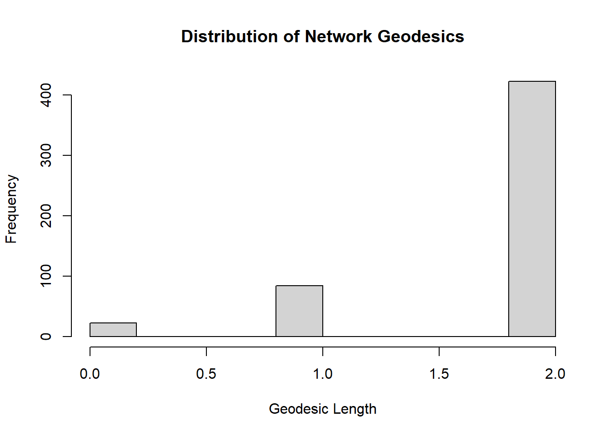
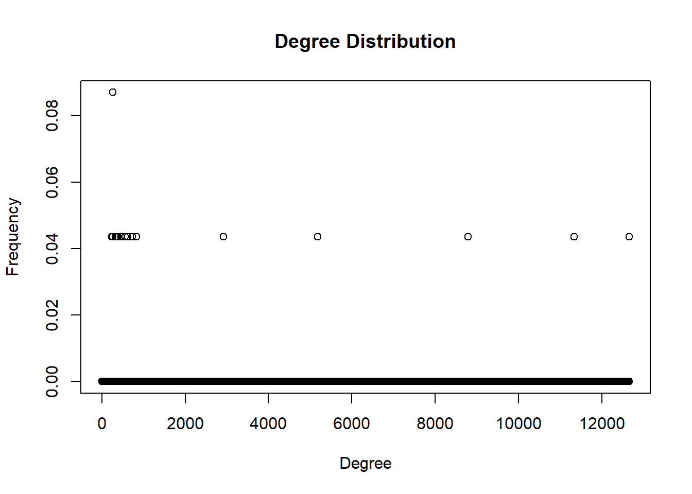
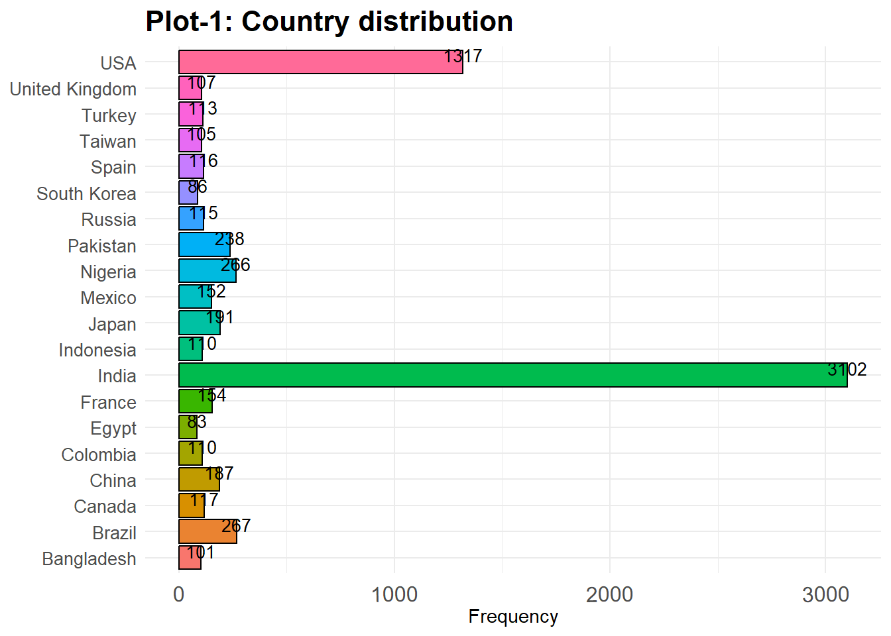
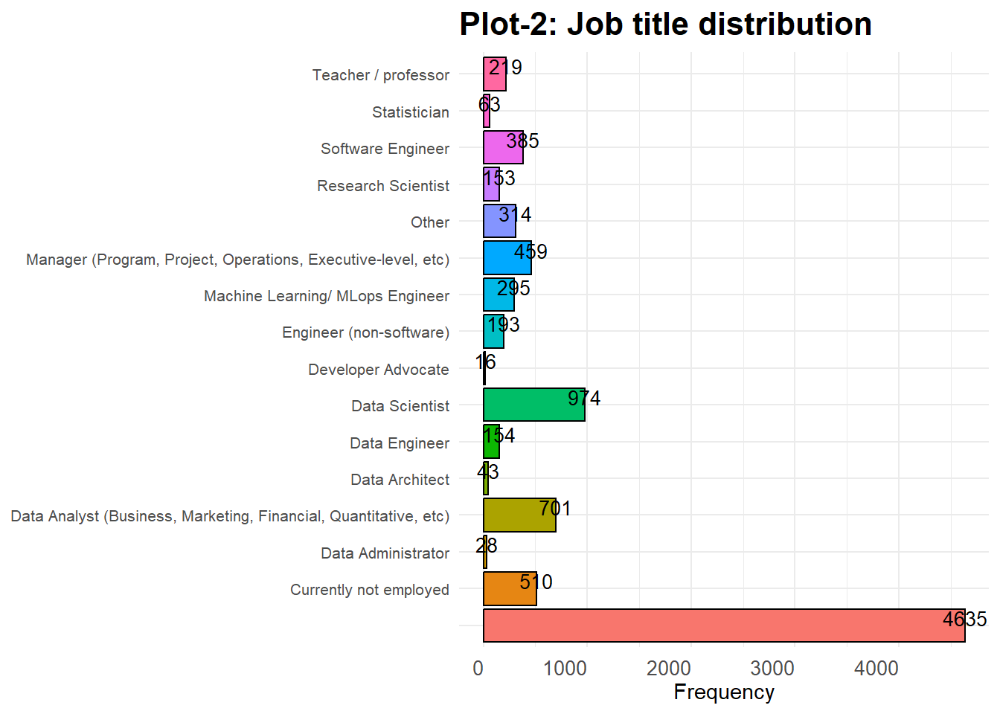
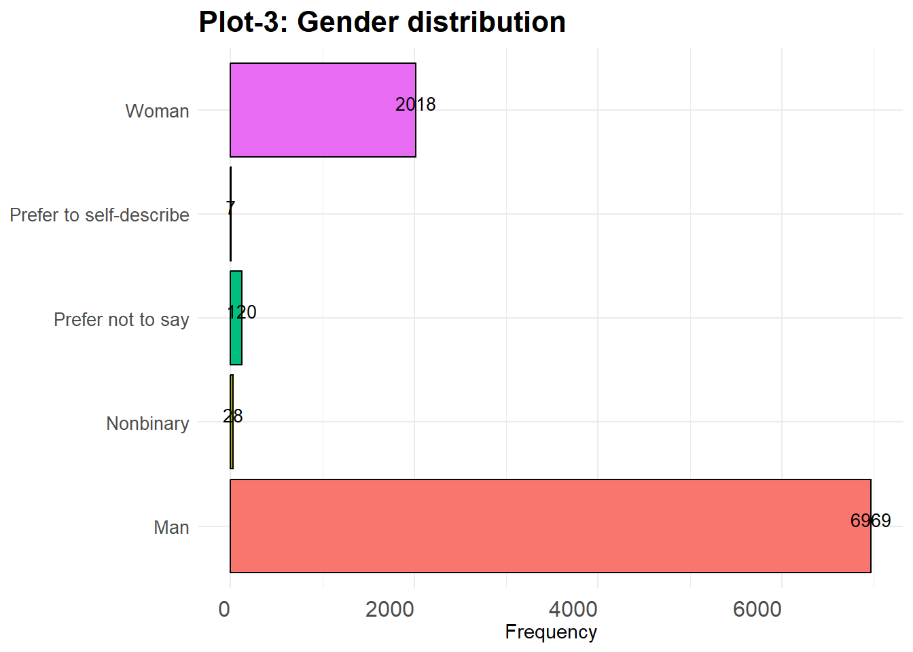
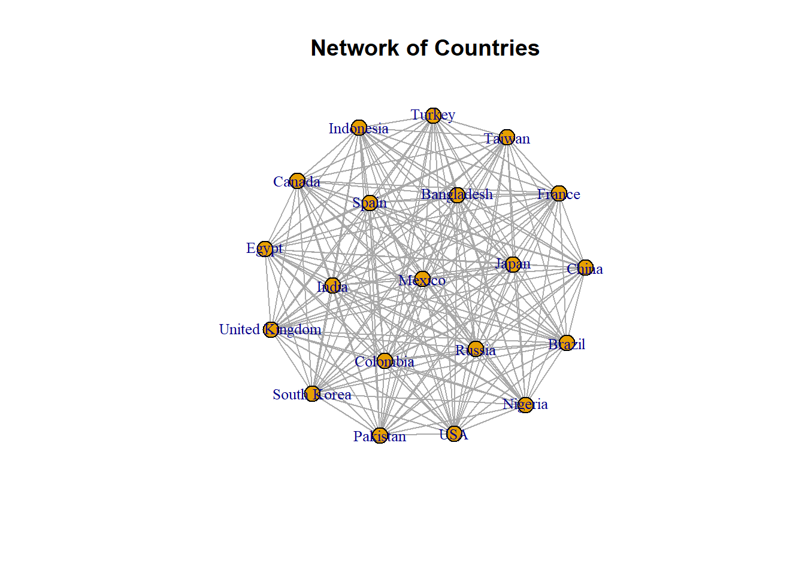

$in_degree
$in_degree$max
[1] 12659
$in_degree$min
[1] 0
$in_degree$high_nodes
+ 1/23 vertex, named, from a5bd026:
[1]
$in_degree$low_nodes
+ 21/23 vertices, named, from a5bd026:
[1] NA India China Taiwan Brazil
[6] USA Mexico Indonesia Pakistan United Kingdom
[11] South Korea France Turkey Egypt Nigeria
[16] Spain Bangladesh Japan Colombia Russia
[21] Canada
$out_degree
$out_degree$max
[1] 8792
$out_degree$min
[1] 0
$out_degree$high_nodes
+ 1/23 vertex, named, from a5bd026:
[1] India
$out_degree$low_nodes
+ 2/23 vertices, named, from a5bd026:
[1] Linear or Logistic Regression
$bonachich_power
$bonachich_power$max
[1] 3.914278
$bonachich_power$min
[1] 0
$bonachich_power$high_nodes
+ 1/23 vertex, named, from a5bd026:
[1] India
$bonachich_power$low_nodes
+ 2/23 vertices, named, from a5bd026:
[1] Linear or Logistic Regression
$eigenvector_centrality
$eigenvector_centrality$max
[1] 1
$eigenvector_centrality$min
[1] 0.02743026
$eigenvector_centrality$high_nodes
+ 1/23 vertex, named, from a5bd026:
[1] India
$eigenvector_centrality$low_nodes
+ 1/23 vertex, named, from a5bd026:
[1] Taiwan
$derived_centrality
$derived_centrality$max
[1] 6329.5
$derived_centrality$min
[1] 121
$derived_centrality$high_nodes
+ 1/23 vertex, named, from a5bd026:
[1]
$derived_centrality$low_nodes
+ 1/23 vertex, named, from a5bd026:
[1] Taiwan
$constraint
$constraint$max
[1] 0.5489773
$constraint$min
[1] 0.201266
$constraint$high_nodes
+ 1/23 vertex, named, from a5bd026:
[1] France
$constraint$low_nodes
+ 1/23 vertex, named, from a5bd026:
[1] Linear or Logistic Regression
$betweenness_centrality
$betweenness_centrality$max
[1] 0
$betweenness_centrality$min
[1] 0
$betweenness_centrality$high_nodes
+ 23/23 vertices, named, from a5bd026:
[1] NA India
[3] China Taiwan
[5] Brazil USA
[7] Mexico Indonesia
[9] Pakistan United Kingdom
[11] South Korea France
[13] Turkey Egypt
[15] Nigeria Spain
[17] Bangladesh Japan
[19] Colombia Russia
+ ... omitted several vertices
$betweenness_centrality$low_nodes
+ 23/23 vertices, named, from a5bd026:
[1] NA India
[3] China Taiwan
[5] Brazil USA
[7] Mexico Indonesia
[9] Pakistan United Kingdom
[11] South Korea France
[13] Turkey Egypt
[15] Nigeria Spain
[17] Bangladesh Japan
[19] Colombia Russia
+ ... omitted several vertices
$brokerage
$brokerage$max
[1] 0.01111111
$brokerage$min
[1] 0.0002127207
$brokerage$high_nodes
[,1] [,2]
[1,] "France" ""
[2,] "France" ""
[3,] "France" ""
[4,] "France" ""
[5,] "France" ""
[6,] "France" ""
[7,] "France" ""
[8,] "France" ""
[9,] "France" ""
[10,] "France" ""
[11,] "France" ""
[12,] "France" ""
[13,] "France" ""
[14,] "France" ""
[15,] "France" ""
[16,] "France" ""
[17,] "France" ""
[18,] "France" ""
[19,] "France" ""
[20,] "France" ""
[21,] "France" ""
[22,] "France" ""
[23,] "France" ""
[24,] "France" ""
[25,] "France" ""
[26,] "France" ""
[27,] "France" ""
[28,] "France" ""
[29,] "France" ""
[30,] "France" ""
[31,] "France" ""
[32,] "France" ""
[33,] "France" ""
[34,] "France" ""
[35,] "France" ""
[36,] "France" ""
[37,] "France" ""
[38,] "France" ""
[39,] "France" ""
[40,] "France" ""
[41,] "France" ""
[42,] "France" ""
[43,] "France" ""
[44,] "France" ""
[45,] "France" ""
[46,] "France" ""
[47,] "France" ""
[48,] "France" ""
[49,] "France" ""
[50,] "France" ""
[51,] "France" ""
[52,] "France" ""
[53,] "France" ""
[54,] "France" ""
[55,] "France" ""
[56,] "France" ""
[57,] "France" ""
[58,] "France" ""
[59,] "France" ""
[60,] "France" ""
[61,] "France" ""
[62,] "France" ""
[63,] "France" ""
[64,] "France" ""
[65,] "France" ""
[66,] "France" ""
[67,] "France" ""
[68,] "France" ""
[69,] "France" ""
[70,] "France" ""
[71,] "France" ""
[72,] "France" ""
[73,] "France" ""
[74,] "France" ""
[75,] "France" ""
[76,] "France" ""
[77,] "France" ""
[78,] "France" ""
[79,] "France" ""
[80,] "France" ""
[81,] "France" ""
[82,] "France" ""
[83,] "France" ""
[84,] "France" ""
[85,] "France" ""
[86,] "France" ""
[87,] "France" ""
[88,] "France" ""
[89,] "France" ""
[90,] "France" ""
$brokerage$low_nodes
[,1] [,2]
[1,] "India" ""
[2,] "India" ""
[3,] "India" ""
[4,] "India" ""
[5,] "India" ""
[6,] "India" ""
[7,] "India" ""
[8,] "India" ""
[9,] "India" ""
[10,] "India" ""
[11,] "India" ""
[12,] "India" ""
[13,] "India" ""
[14,] "India" ""
[15,] "India" ""
[16,] "India" ""
[17,] "India" ""
[18,] "India" ""
[19,] "India" ""
[20,] "India" ""
[21,] "India" ""
[22,] "India" ""
[23,] "India" ""
[24,] "India" ""
[25,] "India" ""
[26,] "India" ""
[27,] "India" ""
[28,] "India" ""
[29,] "India" ""
[30,] "India" ""
[31,] "India" ""
[32,] "India" ""
[33,] "India" ""
[34,] "India" ""
[35,] "India" ""
[36,] "India" ""
[37,] "India" ""
[38,] "India" ""
[39,] "India" ""
[40,] "India" ""
[41,] "India" ""
[42,] "India" ""
[43,] "India" ""
[44,] "India" ""
[45,] "India" ""
[46,] "India" ""
[47,] "India" ""
[48,] "India" ""
[49,] "India" ""
[50,] "India" ""
[51,] "India" ""
[52,] "India" ""
[53,] "India" ""
[54,] "India" ""
[55,] "India" ""
[56,] "India" ""
[57,] "India" ""
[58,] "India" ""
[59,] "India" ""
[60,] "India" ""
[61,] "India" ""
[62,] "India" ""
[63,] "India" ""
[64,] "India" ""
[65,] "India" ""
[66,] "India" ""
[67,] "India" ""
[68,] "India" ""
[69,] "India" ""
[70,] "India" ""
[71,] "India" ""
[72,] "India" ""
[73,] "India" ""
[74,] "India" ""
[75,] "India" ""
[76,] "India" ""
[77,] "India" ""
[78,] "India" ""
[79,] "India" ""
[80,] "India" ""
[81,] "India" ""
[82,] "India" ""
[83,] "India" ""
[84,] "India" ""
[85,] "India" ""
[86,] "India" ""
[87,] "India" ""
[88,] "India" ""
[89,] "India" ""
[90,] "India" ""
[91,] "India" ""
[92,] "India" ""
[93,] "India" ""
[94,] "India" ""
[95,] "India" ""
[96,] "India" ""
[97,] "India" ""
[98,] "India" ""
[99,] "India" ""
[100,] "India" ""
[101,] "India" ""
[102,] "India" ""
[103,] "India" ""
[104,] "India" ""
[105,] "India" ""
[106,] "India" ""
[107,] "India" ""
[108,] "India" ""
[109,] "India" ""
[110,] "India" ""
[111,] "India" ""
[112,] "India" ""
[113,] "India" ""
[114,] "India" ""
[115,] "India" ""
[116,] "India" ""
[117,] "India" ""
[118,] "India" ""
[119,] "India" ""
[120,] "India" ""
[121,] "India" ""
[122,] "India" ""
[123,] "India" ""
[124,] "India" ""
[125,] "India" ""
[126,] "India" ""
[127,] "India" ""
[128,] "India" ""
[129,] "India" ""
[130,] "India" ""
[131,] "India" ""
[132,] "India" ""
[133,] "India" ""
[134,] "India" ""
[135,] "India" ""
[136,] "India" ""
[137,] "India" ""
[138,] "India" ""
[139,] "India" ""
[140,] "India" ""
[141,] "India" ""
[142,] "India" ""
[143,] "India" ""
[144,] "India" ""
[145,] "India" ""
[146,] "India" ""
[147,] "India" ""
[148,] "India" ""
[149,] "India" ""
[150,] "India" ""
[151,] "India" ""
[152,] "India" ""
[153,] "India" ""
[154,] "India" ""
[155,] "India" ""
[156,] "India" ""
[157,] "India" ""
[158,] "India" ""
[159,] "India" ""
[160,] "India" ""
[161,] "India" ""
[162,] "India" ""
[163,] "India" ""
[164,] "India" ""
[165,] "India" ""
[166,] "India" ""
[167,] "India" ""
[168,] "India" ""
[169,] "India" ""
[170,] "India" ""
[171,] "India" ""
[172,] "India" ""
[173,] "India" ""
[174,] "India" ""
[175,] "India" ""
[176,] "India" ""
[177,] "India" ""
[178,] "India" ""
[179,] "India" ""
[180,] "India" ""
[181,] "India" ""
[182,] "India" ""
[183,] "India" ""
[184,] "India" ""
[185,] "India" ""
[186,] "India" ""
[187,] "India" ""
[188,] "India" ""
[189,] "India" ""
[190,] "India" ""
[191,] "India" ""
[192,] "India" ""
[193,] "India" ""
[194,] "India" ""
[195,] "India" ""
[196,] "India" ""
[197,] "India" ""
[198,] "India" ""
[199,] "India" ""
[200,] "India" ""
[201,] "India" ""
[202,] "India" ""
[203,] "India" ""
[204,] "India" ""
[205,] "India" ""
[206,] "India" ""
[207,] "India" ""
[208,] "India" ""
[209,] "India" ""
[210,] "India" ""
[211,] "India" ""
[212,] "India" ""
[213,] "India" ""
[214,] "India" ""
[215,] "India" ""
[216,] "India" ""
[217,] "India" ""
[218,] "India" ""
[219,] "India" ""
[220,] "India" ""
[221,] "India" ""
[222,] "India" ""
[223,] "India" ""
[224,] "India" ""
[225,] "India" ""
[226,] "India" ""
[227,] "India" ""
[228,] "India" ""
[229,] "India" ""
[230,] "India" ""
[231,] "India" ""
[232,] "India" ""
[233,] "India" ""
[234,] "India" ""
[235,] "India" ""
[236,] "India" ""
[237,] "India" ""
[238,] "India" ""
[239,] "India" ""
[240,] "India" ""
[241,] "India" ""
[242,] "India" ""
[243,] "India" ""
[244,] "India" ""
[245,] "India" ""
[246,] "India" ""
[247,] "India" ""
[248,] "India" ""
[249,] "India" ""
[250,] "India" ""
[251,] "India" ""
[252,] "India" ""
[253,] "India" ""
[254,] "India" ""
[255,] "India" ""
[256,] "India" ""
[257,] "India" ""
[258,] "India" ""
[259,] "India" ""
[260,] "India" ""
[261,] "India" ""
[262,] "India" ""
[263,] "India" ""
[264,] "India" ""
[265,] "India" ""
[266,] "India" ""
[267,] "India" ""
[268,] "India" ""
[269,] "India" ""
[270,] "India" ""
[271,] "India" ""
[272,] "India" ""
[273,] "India" ""
[274,] "India" ""
[275,] "India" ""
[276,] "India" ""
[277,] "India" ""
[278,] "India" ""
[279,] "India" ""
[280,] "India" ""
[281,] "India" ""
[282,] "India" ""
[283,] "India" ""
[284,] "India" ""
[285,] "India" ""
[286,] "India" ""
[287,] "India" ""
[288,] "India" ""
[289,] "India" ""
[290,] "India" ""
[291,] "India" ""
[292,] "India" ""
[293,] "India" ""
[294,] "India" ""
[295,] "India" ""
[296,] "India" ""
[297,] "India" ""
[298,] "India" ""
[299,] "India" ""
[300,] "India" ""
[301,] "India" ""
[302,] "India" ""
[303,] "India" ""
[304,] "India" ""
[305,] "India" ""
[306,] "India" ""
[307,] "India" ""
[308,] "India" ""
[309,] "India" ""
[310,] "India" ""
[311,] "India" ""
[312,] "India" ""
[313,] "India" ""
[314,] "India" ""
[315,] "India" ""
[316,] "India" ""
[317,] "India" ""
[318,] "India" ""
[319,] "India" ""
[320,] "India" ""
[321,] "India" ""
[322,] "India" ""
[323,] "India" ""
[324,] "India" ""
[325,] "India" ""
[326,] "India" ""
[327,] "India" ""
[328,] "India" ""
[329,] "India" ""
[330,] "India" ""
[331,] "India" ""
[332,] "India" ""
[333,] "India" ""
[334,] "India" ""
[335,] "India" ""
[336,] "India" ""
[337,] "India" ""
[338,] "India" ""
[339,] "India" ""
[340,] "India" ""
[341,] "India" ""
[342,] "India" ""
[343,] "India" ""
[344,] "India" ""
[345,] "India" ""
[346,] "India" ""
[347,] "India" ""
[348,] "India" ""
[349,] "India" ""
[350,] "India" ""
[351,] "India" ""
[352,] "India" ""
[353,] "India" ""
[354,] "India" ""
[355,] "India" ""
[356,] "India" ""
[357,] "India" ""
[358,] "India" ""
[359,] "India" ""
[360,] "India" ""
[361,] "India" ""
[362,] "India" ""
[363,] "India" ""
[364,] "India" ""
[365,] "India" ""
[366,] "India" ""
[367,] "India" ""
[368,] "India" ""
[369,] "India" ""
[370,] "India" ""
[371,] "India" ""
[372,] "India" ""
[373,] "India" ""
[374,] "India" ""
[375,] "India" ""
[376,] "India" ""
[377,] "India" ""
[378,] "India" ""
[379,] "India" ""
[380,] "India" ""
[381,] "India" ""
[382,] "India" ""
[383,] "India" ""
[384,] "India" ""
[385,] "India" ""
[386,] "India" ""
[387,] "India" ""
[388,] "India" ""
[389,] "India" ""
[390,] "India" ""
[391,] "India" ""
[392,] "India" ""
[393,] "India" ""
[394,] "India" ""
[395,] "India" ""
[396,] "India" ""
[397,] "India" ""
[398,] "India" ""
[399,] "India" ""
[400,] "India" ""
[401,] "India" ""
[402,] "India" ""
[403,] "India" ""
[404,] "India" ""
[405,] "India" ""
[406,] "India" ""
[407,] "India" ""
[408,] "India" ""
[409,] "India" ""
[410,] "India" ""
[411,] "India" ""
[412,] "India" ""
[413,] "India" ""
[414,] "India" ""
[415,] "India" ""
[416,] "India" ""
[417,] "India" ""
[418,] "India" ""
[419,] "India" ""
[420,] "India" ""
[421,] "India" ""
[422,] "India" ""
[423,] "India" ""
[424,] "India" ""
[425,] "India" ""
[426,] "India" ""
[427,] "India" ""
[428,] "India" ""
[429,] "India" ""
[430,] "India" ""
[431,] "India" ""
[432,] "India" ""
[433,] "India" ""
[434,] "India" ""
[435,] "India" ""
[436,] "India" ""
[437,] "India" ""
[438,] "India" ""
[439,] "India" ""
[440,] "India" ""
[441,] "India" ""
[442,] "India" ""
[443,] "India" ""
[444,] "India" ""
[445,] "India" ""
[446,] "India" ""
[447,] "India" ""
[448,] "India" ""
[449,] "India" ""
[450,] "India" ""
[451,] "India" ""
[452,] "India" ""
[453,] "India" ""
[454,] "India" ""
[455,] "India" ""
[456,] "India" ""
[457,] "India" ""
[458,] "India" ""
[459,] "India" ""
[460,] "India" ""
[461,] "India" ""
[462,] "India" ""
[463,] "India" ""
[464,] "India" ""
[465,] "India" ""
[466,] "India" ""
[467,] "India" ""
[468,] "India" ""
[469,] "India" ""
[470,] "India" ""
[471,] "India" ""
[472,] "India" ""
[473,] "India" ""
[474,] "India" ""
[475,] "India" ""
[476,] "India" ""
[477,] "India" ""
[478,] "India" ""
[479,] "India" ""
[480,] "India" ""
[481,] "India" ""
[482,] "India" ""
[483,] "India" ""
[484,] "India" ""
[485,] "India" ""
[486,] "India" ""
[487,] "India" ""
[488,] "India" ""
[489,] "India" ""
[490,] "India" ""
[491,] "India" ""
[492,] "India" ""
[493,] "India" ""
[494,] "India" ""
[495,] "India" ""
[496,] "India" ""
[497,] "India" ""
[498,] "India" ""
[499,] "India" ""
[500,] "India" ""
[501,] "India" ""
[502,] "India" ""
[503,] "India" ""
[504,] "India" ""
[505,] "India" ""
[506,] "India" ""
[507,] "India" ""
[508,] "India" ""
[509,] "India" ""
[510,] "India" ""
[511,] "India" ""
[512,] "India" ""
[513,] "India" ""
[514,] "India" ""
[515,] "India" ""
[516,] "India" ""
[517,] "India" ""
[518,] "India" ""
[519,] "India" ""
[520,] "India" ""
[521,] "India" ""
[522,] "India" ""
[523,] "India" ""
[524,] "India" ""
[525,] "India" ""
[526,] "India" ""
[527,] "India" ""
[528,] "India" ""
[529,] "India" ""
[530,] "India" ""
[531,] "India" ""
[532,] "India" ""
[533,] "India" ""
[534,] "India" ""
[535,] "India" ""
[536,] "India" ""
[537,] "India" ""
[538,] "India" ""
[539,] "India" ""
[540,] "India" ""
[541,] "India" ""
[542,] "India" ""
[543,] "India" ""
[544,] "India" ""
[545,] "India" ""
[546,] "India" ""
[547,] "India" ""
[548,] "India" ""
[549,] "India" ""
[550,] "India" ""
[551,] "India" ""
[552,] "India" ""
[553,] "India" ""
[554,] "India" ""
[555,] "India" ""
[556,] "India" ""
[557,] "India" ""
[558,] "India" ""
[559,] "India" ""
[560,] "India" ""
[561,] "India" ""
[562,] "India" ""
[563,] "India" ""
[564,] "India" ""
[565,] "India" ""
[566,] "India" ""
[567,] "India" ""
[568,] "India" ""
[569,] "India" ""
[570,] "India" ""
[571,] "India" ""
[572,] "India" ""
[573,] "India" ""
[574,] "India" ""
[575,] "India" ""
[576,] "India" ""
[577,] "India" ""
[578,] "India" ""
[579,] "India" ""
[580,] "India" ""
[581,] "India" ""
[582,] "India" ""
[583,] "India" ""
[584,] "India" ""
[585,] "India" ""
[586,] "India" ""
[587,] "India" ""
[588,] "India" ""
[589,] "India" ""
[590,] "India" ""
[591,] "India" ""
[592,] "India" ""
[593,] "India" ""
[594,] "India" ""
[595,] "India" ""
[596,] "India" ""
[597,] "India" ""
[598,] "India" ""
[599,] "India" ""
[600,] "India" ""
[601,] "India" ""
[602,] "India" ""
[603,] "India" ""
[604,] "India" ""
[605,] "India" ""
[606,] "India" ""
[607,] "India" ""
[608,] "India" ""
[609,] "India" ""
[610,] "India" ""
[611,] "India" ""
[612,] "India" ""
[613,] "India" ""
[614,] "India" ""
[615,] "India" ""
[616,] "India" ""
[617,] "India" ""
[618,] "India" ""
[619,] "India" ""
[620,] "India" ""
[621,] "India" ""
[622,] "India" ""
[623,] "India" ""
[624,] "India" ""
[625,] "India" ""
[626,] "India" ""
[627,] "India" ""
[628,] "India" ""
[629,] "India" ""
[630,] "India" ""
[631,] "India" ""
[632,] "India" ""
[633,] "India" ""
[634,] "India" ""
[635,] "India" ""
[636,] "India" ""
[637,] "India" ""
[638,] "India" ""
[639,] "India" ""
[640,] "India" ""
[641,] "India" ""
[642,] "India" ""
[643,] "India" ""
[644,] "India" ""
[645,] "India" ""
[646,] "India" ""
[647,] "India" ""
[648,] "India" ""
[649,] "India" ""
[650,] "India" ""
[651,] "India" ""
[652,] "India" ""
[653,] "India" ""
[654,] "India" ""
[655,] "India" ""
[656,] "India" ""
[657,] "India" ""
[658,] "India" ""
[659,] "India" ""
[660,] "India" ""
[661,] "India" ""
[662,] "India" ""
[663,] "India" ""
[664,] "India" ""
[665,] "India" ""
[666,] "India" ""
[667,] "India" ""
[668,] "India" ""
[669,] "India" ""
[670,] "India" ""
[671,] "India" ""
[672,] "India" ""
[673,] "India" ""
[674,] "India" ""
[675,] "India" ""
[676,] "India" ""
[677,] "India" ""
[678,] "India" ""
[679,] "India" ""
[680,] "India" ""
[681,] "India" ""
[682,] "India" ""
[683,] "India" ""
[684,] "India" ""
[685,] "India" ""
[686,] "India" ""
[687,] "India" ""
[688,] "India" ""
[689,] "India" ""
[690,] "India" ""
[691,] "India" ""
[692,] "India" ""
[693,] "India" ""
[694,] "India" ""
[695,] "India" ""
[696,] "India" ""
[697,] "India" ""
[698,] "India" ""
[699,] "India" ""
[700,] "India" ""
[701,] "India" ""
[702,] "India" ""
[703,] "India" ""
[704,] "India" ""
[705,] "India" ""
[706,] "India" ""
[707,] "India" ""
[708,] "India" ""
[709,] "India" ""
[710,] "India" ""
[711,] "India" ""
[712,] "India" ""
[713,] "India" ""
[714,] "India" ""
[715,] "India" ""
[716,] "India" ""
[717,] "India" ""
[718,] "India" ""
[719,] "India" ""
[720,] "India" ""
[721,] "India" ""
[722,] "India" ""
[723,] "India" ""
[724,] "India" ""
[725,] "India" ""
[726,] "India" ""
[727,] "India" ""
[728,] "India" ""
[729,] "India" ""
[730,] "India" ""
[731,] "India" ""
[732,] "India" ""
[733,] "India" ""
[734,] "India" ""
[735,] "India" ""
[736,] "India" ""
[737,] "India" ""
[738,] "India" ""
[739,] "India" ""
[740,] "India" ""
[741,] "India" ""
[742,] "India" ""
[743,] "India" ""
[744,] "India" ""
[745,] "India" ""
[746,] "India" ""
[747,] "India" ""
[748,] "India" ""
[749,] "India" ""
[750,] "India" ""
[751,] "India" ""
[752,] "India" ""
[753,] "India" ""
[754,] "India" ""
[755,] "India" ""
[756,] "India" ""
[757,] "India" ""
[758,] "India" ""
[759,] "India" ""
[760,] "India" ""
[761,] "India" ""
[762,] "India" ""
[763,] "India" ""
[764,] "India" ""
[765,] "India" ""
[766,] "India" ""
[767,] "India" ""
[768,] "India" ""
[769,] "India" ""
[770,] "India" ""
[771,] "India" ""
[772,] "India" ""
[773,] "India" ""
[774,] "India" ""
[775,] "India" ""
[776,] "India" ""
[777,] "India" ""
[778,] "India" ""
[779,] "India" ""
[780,] "India" ""
[781,] "India" ""
[782,] "India" ""
[783,] "India" ""
[784,] "India" ""
[785,] "India" ""
[786,] "India" ""
[787,] "India" ""
[788,] "India" ""
[789,] "India" ""
[790,] "India" ""
[791,] "India" ""
[792,] "India" ""
[793,] "India" ""
[794,] "India" ""
[795,] "India" ""
[796,] "India" ""
[797,] "India" ""
[798,] "India" ""
[799,] "India" ""
[800,] "India" ""
[801,] "India" ""
[802,] "India" ""
[803,] "India" ""
[804,] "India" ""
[805,] "India" ""
[806,] "India" ""
[807,] "India" ""
[808,] "India" ""
[809,] "India" ""
[810,] "India" ""
[811,] "India" ""
[812,] "India" ""
[813,] "India" ""
[814,] "India" ""
[815,] "India" ""
[816,] "India" ""
[817,] "India" ""
[818,] "India" ""
[819,] "India" ""
[820,] "India" ""
[821,] "India" ""
[822,] "India" ""
[823,] "India" ""
[824,] "India" ""
[825,] "India" ""
[826,] "India" ""
[827,] "India" ""
[828,] "India" ""
[829,] "India" ""
[830,] "India" ""
[831,] "India" ""
[832,] "India" ""
[833,] "India" ""
[834,] "India" ""
[835,] "India" ""
[836,] "India" ""
[837,] "India" ""
[838,] "India" ""
[839,] "India" ""
[840,] "India" ""
[841,] "India" ""
[842,] "India" ""
[843,] "India" ""
[844,] "India" ""
[845,] "India" ""
[846,] "India" ""
[847,] "India" ""
[848,] "India" ""
[849,] "India" ""
[850,] "India" ""
[851,] "India" ""
[852,] "India" ""
[853,] "India" ""
[854,] "India" ""
[855,] "India" ""
[856,] "India" ""
[857,] "India" ""
[858,] "India" ""
[859,] "India" ""
[860,] "India" ""
[861,] "India" ""
[862,] "India" ""
[863,] "India" ""
[864,] "India" ""
[865,] "India" ""
[866,] "India" ""
[867,] "India" ""
[868,] "India" ""
[869,] "India" ""
[870,] "India" ""
[871,] "India" ""
[872,] "India" ""
[873,] "India" ""
[874,] "India" ""
[875,] "India" ""
[876,] "India" ""
[877,] "India" ""
[878,] "India" ""
[879,] "India" ""
[880,] "India" ""
[881,] "India" ""
[882,] "India" ""
[883,] "India" ""
[884,] "India" ""
[885,] "India" ""
[886,] "India" ""
[887,] "India" ""
[888,] "India" ""
[889,] "India" ""
[890,] "India" ""
[891,] "India" ""
[892,] "India" ""
[893,] "India" ""
[894,] "India" ""
[895,] "India" ""
[896,] "India" ""
[897,] "India" ""
[898,] "India" ""
[899,] "India" ""
[900,] "India" ""
[901,] "India" ""
[902,] "India" ""
[903,] "India" ""
[904,] "India" ""
[905,] "India" ""
[906,] "India" ""
[907,] "India" ""
[908,] "India" ""
[909,] "India" ""
[910,] "India" ""
[911,] "India" ""
[912,] "India" ""
[913,] "India" ""
[914,] "India" ""
[915,] "India" ""
[916,] "India" ""
[917,] "India" ""
[918,] "India" ""
[919,] "India" ""
[920,] "India" ""
[921,] "India" ""
[922,] "India" ""
[923,] "India" ""
[924,] "India" ""
[925,] "India" ""
[926,] "India" ""
[927,] "India" ""
[928,] "India" ""
[929,] "India" ""
[930,] "India" ""
[931,] "India" ""
[932,] "India" ""
[933,] "India" ""
[934,] "India" ""
[935,] "India" ""
[936,] "India" ""
[937,] "India" ""
[938,] "India" ""
[939,] "India" ""
[940,] "India" ""
[941,] "India" ""
[942,] "India" ""
[943,] "India" ""
[944,] "India" ""
[945,] "India" ""
[946,] "India" ""
[947,] "India" ""
[948,] "India" ""
[949,] "India" ""
[950,] "India" ""
[951,] "India" ""
[952,] "India" ""
[953,] "India" ""
[954,] "India" ""
[955,] "India" ""
[956,] "India" ""
[957,] "India" ""
[958,] "India" ""
[959,] "India" ""
[960,] "India" ""
[961,] "India" ""
[962,] "India" ""
[963,] "India" ""
[964,] "India" ""
[965,] "India" ""
[966,] "India" ""
[967,] "India" ""
[968,] "India" ""
[969,] "India" ""
[970,] "India" ""
[971,] "India" ""
[972,] "India" ""
[973,] "India" ""
[974,] "India" ""
[975,] "India" ""
[976,] "India" ""
[977,] "India" ""
[978,] "India" ""
[979,] "India" ""
[980,] "India" ""
[981,] "India" ""
[982,] "India" ""
[983,] "India" ""
[984,] "India" ""
[985,] "India" ""
[986,] "India" ""
[987,] "India" ""
[988,] "India" ""
[989,] "India" ""
[990,] "India" ""
[991,] "India" ""
[992,] "India" ""
[993,] "India" ""
[994,] "India" ""
[995,] "India" ""
[996,] "India" ""
[997,] "India" ""
[998,] "India" ""
[999,] "India" ""
[1000,] "India" ""
[1001,] "India" ""
[1002,] "India" ""
[1003,] "India" ""
[1004,] "India" ""
[1005,] "India" ""
[1006,] "India" ""
[1007,] "India" ""
[1008,] "India" ""
[1009,] "India" ""
[1010,] "India" ""
[1011,] "India" ""
[1012,] "India" ""
[1013,] "India" ""
[1014,] "India" ""
[1015,] "India" ""
[1016,] "India" ""
[1017,] "India" ""
[1018,] "India" ""
[1019,] "India" ""
[1020,] "India" ""
[1021,] "India" ""
[1022,] "India" ""
[1023,] "India" ""
[1024,] "India" ""
[1025,] "India" ""
[1026,] "India" ""
[1027,] "India" ""
[1028,] "India" ""
[1029,] "India" ""
[1030,] "India" ""
[1031,] "India" ""
[1032,] "India" ""
[1033,] "India" ""
[1034,] "India" ""
[1035,] "India" ""
[1036,] "India" ""
[1037,] "India" ""
[1038,] "India" ""
[1039,] "India" ""
[1040,] "India" ""
[1041,] "India" ""
[1042,] "India" ""
[1043,] "India" ""
[1044,] "India" ""
[1045,] "India" ""
[1046,] "India" ""
[1047,] "India" ""
[1048,] "India" ""
[1049,] "India" ""
[1050,] "India" ""
[1051,] "India" ""
[1052,] "India" ""
[1053,] "India" ""
[1054,] "India" ""
[1055,] "India" ""
[1056,] "India" ""
[1057,] "India" ""
[1058,] "India" ""
[1059,] "India" ""
[1060,] "India" ""
[1061,] "India" ""
[1062,] "India" ""
[1063,] "India" ""
[1064,] "India" ""
[1065,] "India" ""
[1066,] "India" ""
[1067,] "India" ""
[1068,] "India" ""
[1069,] "India" ""
[1070,] "India" ""
[1071,] "India" ""
[1072,] "India" ""
[1073,] "India" ""
[1074,] "India" ""
[1075,] "India" ""
[1076,] "India" ""
[1077,] "India" ""
[1078,] "India" ""
[1079,] "India" ""
[1080,] "India" ""
[1081,] "India" ""
[1082,] "India" ""
[1083,] "India" ""
[1084,] "India" ""
[1085,] "India" ""
[1086,] "India" ""
[1087,] "India" ""
[1088,] "India" ""
[1089,] "India" ""
[1090,] "India" ""
[1091,] "India" ""
[1092,] "India" ""
[1093,] "India" ""
[1094,] "India" ""
[1095,] "India" ""
[1096,] "India" ""
[1097,] "India" ""
[1098,] "India" ""
[1099,] "India" ""
[1100,] "India" ""
[1101,] "India" ""
[1102,] "India" ""
[1103,] "India" ""
[1104,] "India" ""
[1105,] "India" ""
[1106,] "India" ""
[1107,] "India" ""
[1108,] "India" ""
[1109,] "India" ""
[1110,] "India" ""
[1111,] "India" ""
[1112,] "India" ""
[1113,] "India" ""
[1114,] "India" ""
[1115,] "India" ""
[1116,] "India" ""
[1117,] "India" ""
[1118,] "India" ""
[1119,] "India" ""
[1120,] "India" ""
[1121,] "India" ""
[1122,] "India" ""
[1123,] "India" ""
[1124,] "India" ""
[1125,] "India" ""
[1126,] "India" ""
[1127,] "India" ""
[1128,] "India" ""
[1129,] "India" ""
[1130,] "India" ""
[1131,] "India" ""
[1132,] "India" ""
[1133,] "India" ""
[1134,] "India" ""
[1135,] "India" ""
[1136,] "India" ""
[1137,] "India" ""
[1138,] "India" ""
[1139,] "India" ""
[1140,] "India" ""
[1141,] "India" ""
[1142,] "India" ""
[1143,] "India" ""
[1144,] "India" ""
[1145,] "India" ""
[1146,] "India" ""
[1147,] "India" ""
[1148,] "India" ""
[1149,] "India" ""
[1150,] "India" ""
[1151,] "India" ""
[1152,] "India" ""
[1153,] "India" ""
[1154,] "India" ""
[1155,] "India" ""
[1156,] "India" ""
[1157,] "India" ""
[1158,] "India" ""
[1159,] "India" ""
[1160,] "India" ""
[1161,] "India" ""
[1162,] "India" ""
[1163,] "India" ""
[1164,] "India" ""
[1165,] "India" ""
[1166,] "India" ""
[1167,] "India" ""
[1168,] "India" ""
[1169,] "India" ""
[1170,] "India" ""
[1171,] "India" ""
[1172,] "India" ""
[1173,] "India" ""
[1174,] "India" ""
[1175,] "India" ""
[1176,] "India" ""
[1177,] "India" ""
[1178,] "India" ""
[1179,] "India" ""
[1180,] "India" ""
[1181,] "India" ""
[1182,] "India" ""
[1183,] "India" ""
[1184,] "India" ""
[1185,] "India" ""
[1186,] "India" ""
[1187,] "India" ""
[1188,] "India" ""
[1189,] "India" ""
[1190,] "India" ""
[1191,] "India" ""
[1192,] "India" ""
[1193,] "India" ""
[1194,] "India" ""
[1195,] "India" ""
[1196,] "India" ""
[1197,] "India" ""
[1198,] "India" ""
[1199,] "India" ""
[1200,] "India" ""
[1201,] "India" ""
[1202,] "India" ""
[1203,] "India" ""
[1204,] "India" ""
[1205,] "India" ""
[1206,] "India" ""
[1207,] "India" ""
[1208,] "India" ""
[1209,] "India" ""
[1210,] "India" ""
[1211,] "India" ""
[1212,] "India" ""
[1213,] "India" ""
[1214,] "India" ""
[1215,] "India" ""
[1216,] "India" ""
[1217,] "India" ""
[1218,] "India" ""
[1219,] "India" ""
[1220,] "India" ""
[1221,] "India" ""
[1222,] "India" ""
[1223,] "India" ""
[1224,] "India" ""
[1225,] "India" ""
[1226,] "India" ""
[1227,] "India" ""
[1228,] "India" ""
[1229,] "India" ""
[1230,] "India" ""
[1231,] "India" ""
[1232,] "India" ""
[1233,] "India" ""
[1234,] "India" ""
[1235,] "India" ""
[1236,] "India" ""
[1237,] "India" ""
[1238,] "India" ""
[1239,] "India" ""
[1240,] "India" ""
[1241,] "India" ""
[1242,] "India" ""
[1243,] "India" ""
[1244,] "India" ""
[1245,] "India" ""
[1246,] "India" ""
[1247,] "India" ""
[1248,] "India" ""
[1249,] "India" ""
[1250,] "India" ""
[1251,] "India" ""
[1252,] "India" ""
[1253,] "India" ""
[1254,] "India" ""
[1255,] "India" ""
[1256,] "India" ""
[1257,] "India" ""
[1258,] "India" ""
[1259,] "India" ""
[1260,] "India" ""
[1261,] "India" ""
[1262,] "India" ""
[1263,] "India" ""
[1264,] "India" ""
[1265,] "India" ""
[1266,] "India" ""
[1267,] "India" ""
[1268,] "India" ""
[1269,] "India" ""
[1270,] "India" ""
[1271,] "India" ""
[1272,] "India" ""
[1273,] "India" ""
[1274,] "India" ""
[1275,] "India" ""
[1276,] "India" ""
[1277,] "India" ""
[1278,] "India" ""
[1279,] "India" ""
[1280,] "India" ""
[1281,] "India" ""
[1282,] "India" ""
[1283,] "India" ""
[1284,] "India" ""
[1285,] "India" ""
[1286,] "India" ""
[1287,] "India" ""
[1288,] "India" ""
[1289,] "India" ""
[1290,] "India" ""
[1291,] "India" ""
[1292,] "India" ""
[1293,] "India" ""
[1294,] "India" ""
[1295,] "India" ""
[1296,] "India" ""
[1297,] "India" ""
[1298,] "India" ""
[1299,] "India" ""
[1300,] "India" ""
[1301,] "India" ""
[1302,] "India" ""
[1303,] "India" ""
[1304,] "India" ""
[1305,] "India" ""
[1306,] "India" ""
[1307,] "India" ""
[1308,] "India" ""
[1309,] "India" ""
[1310,] "India" ""
[1311,] "India" ""
[1312,] "India" ""
[1313,] "India" ""
[1314,] "India" ""
[1315,] "India" ""
[1316,] "India" ""
[1317,] "India" ""
[1318,] "India" ""
[1319,] "India" ""
[1320,] "India" ""
[1321,] "India" ""
[1322,] "India" ""
[1323,] "India" ""
[1324,] "India" ""
[1325,] "India" ""
[1326,] "India" ""
[1327,] "India" ""
[1328,] "India" ""
[1329,] "India" ""
[1330,] "India" ""
[1331,] "India" ""
[1332,] "India" ""
[1333,] "India" ""
[1334,] "India" ""
[1335,] "India" ""
[1336,] "India" ""
[1337,] "India" ""
[1338,] "India" ""
[1339,] "India" ""
[1340,] "India" ""
[1341,] "India" ""
[1342,] "India" ""
[1343,] "India" ""
[1344,] "India" ""
[1345,] "India" ""
[1346,] "India" ""
[1347,] "India" ""
[1348,] "India" ""
[1349,] "India" ""
[1350,] "India" ""
[1351,] "India" ""
[1352,] "India" ""
[1353,] "India" ""
[1354,] "India" ""
[1355,] "India" ""
[1356,] "India" ""
[1357,] "India" ""
[1358,] "India" ""
[1359,] "India" ""
[1360,] "India" ""
[1361,] "India" ""
[1362,] "India" ""
[1363,] "India" ""
[1364,] "India" ""
[1365,] "India" ""
[1366,] "India" ""
[1367,] "India" ""
[1368,] "India" ""
[1369,] "India" ""
[1370,] "India" ""
[1371,] "India" ""
[1372,] "India" ""
[1373,] "India" ""
[1374,] "India" ""
[1375,] "India" ""
[1376,] "India" ""
[1377,] "India" ""
[1378,] "India" ""
[1379,] "India" ""
[1380,] "India" ""
[1381,] "India" ""
[1382,] "India" ""
[1383,] "India" ""
[1384,] "India" ""
[1385,] "India" ""
[1386,] "India" ""
[1387,] "India" ""
[1388,] "India" ""
[1389,] "India" ""
[1390,] "India" ""
[1391,] "India" ""
[1392,] "India" ""
[1393,] "India" ""
[1394,] "India" ""
[1395,] "India" ""
[1396,] "India" ""
[1397,] "India" ""
[1398,] "India" ""
[1399,] "India" ""
[1400,] "India" ""
[1401,] "India" ""
[1402,] "India" ""
[1403,] "India" ""
[1404,] "India" ""
[1405,] "India" ""
[1406,] "India" ""
[1407,] "India" ""
[1408,] "India" ""
[1409,] "India" ""
[1410,] "India" ""
[1411,] "India" ""
[1412,] "India" ""
[1413,] "India" ""
[1414,] "India" ""
[1415,] "India" ""
[1416,] "India" ""
[1417,] "India" ""
[1418,] "India" ""
[1419,] "India" ""
[1420,] "India" ""
[1421,] "India" ""
[1422,] "India" ""
[1423,] "India" ""
[1424,] "India" ""
[1425,] "India" ""
[1426,] "India" ""
[1427,] "India" ""
[1428,] "India" ""
[1429,] "India" ""
[1430,] "India" ""
[1431,] "India" ""
[1432,] "India" ""
[1433,] "India" ""
[1434,] "India" ""
[1435,] "India" ""
[1436,] "India" ""
[1437,] "India" ""
[1438,] "India" ""
[1439,] "India" ""
[1440,] "India" ""
[1441,] "India" ""
[1442,] "India" ""
[1443,] "India" ""
[1444,] "India" ""
[1445,] "India" ""
[1446,] "India" ""
[1447,] "India" ""
[1448,] "India" ""
[1449,] "India" ""
[1450,] "India" ""
[1451,] "India" ""
[1452,] "India" ""
[1453,] "India" ""
[1454,] "India" ""
[1455,] "India" ""
[1456,] "India" ""
[1457,] "India" ""
[1458,] "India" ""
[1459,] "India" ""
[1460,] "India" ""
[1461,] "India" ""
[1462,] "India" ""
[1463,] "India" ""
[1464,] "India" ""
[1465,] "India" ""
[1466,] "India" ""
[1467,] "India" ""
[1468,] "India" ""
[1469,] "India" ""
[1470,] "India" ""
[1471,] "India" ""
[1472,] "India" ""
[1473,] "India" ""
[1474,] "India" ""
[1475,] "India" ""
[1476,] "India" ""
[1477,] "India" ""
[1478,] "India" ""
[1479,] "India" ""
[1480,] "India" ""
[1481,] "India" ""
[1482,] "India" ""
[1483,] "India" ""
[1484,] "India" ""
[1485,] "India" ""
[1486,] "India" ""
[1487,] "India" ""
[1488,] "India" ""
[1489,] "India" ""
[1490,] "India" ""
[1491,] "India" ""
[1492,] "India" ""
[1493,] "India" ""
[1494,] "India" ""
[1495,] "India" ""
[1496,] "India" ""
[1497,] "India" ""
[1498,] "India" ""
[1499,] "India" ""
[1500,] "India" ""
[1501,] "India" ""
[1502,] "India" ""
[1503,] "India" ""
[1504,] "India" ""
[1505,] "India" ""
[1506,] "India" ""
[1507,] "India" ""
[1508,] "India" ""
[1509,] "India" ""
[1510,] "India" ""
[1511,] "India" ""
[1512,] "India" ""
[1513,] "India" ""
[1514,] "India" ""
[1515,] "India" ""
[1516,] "India" ""
[1517,] "India" ""
[1518,] "India" ""
[1519,] "India" ""
[1520,] "India" ""
[1521,] "India" ""
[1522,] "India" ""
[1523,] "India" ""
[1524,] "India" ""
[1525,] "India" ""
[1526,] "India" ""
[1527,] "India" ""
[1528,] "India" ""
[1529,] "India" ""
[1530,] "India" ""
[1531,] "India" ""
[1532,] "India" ""
[1533,] "India" ""
[1534,] "India" ""
[1535,] "India" ""
[1536,] "India" ""
[1537,] "India" ""
[1538,] "India" ""
[1539,] "India" ""
[1540,] "India" ""
[1541,] "India" ""
[1542,] "India" ""
[1543,] "India" ""
[1544,] "India" ""
[1545,] "India" ""
[1546,] "India" ""
[1547,] "India" ""
[1548,] "India" ""
[1549,] "India" ""
[1550,] "India" ""
[1551,] "India" ""
[1552,] "India" ""
[1553,] "India" ""
[1554,] "India" ""
[1555,] "India" ""
[1556,] "India" ""
[1557,] "India" ""
[1558,] "India" ""
[1559,] "India" ""
[1560,] "India" ""
[1561,] "India" ""
[1562,] "India" ""
[1563,] "India" ""
[1564,] "India" ""
[1565,] "India" ""
[1566,] "India" ""
[1567,] "India" ""
[1568,] "India" ""
[1569,] "India" ""
[1570,] "India" ""
[1571,] "India" ""
[1572,] "India" ""
[1573,] "India" ""
[1574,] "India" ""
[1575,] "India" ""
[1576,] "India" ""
[1577,] "India" ""
[1578,] "India" ""
[1579,] "India" ""
[1580,] "India" ""
[1581,] "India" ""
[1582,] "India" ""
[1583,] "India" ""
[1584,] "India" ""
[1585,] "India" ""
[1586,] "India" ""
[1587,] "India" ""
[1588,] "India" ""
[1589,] "India" ""
[1590,] "India" ""
[1591,] "India" ""
[1592,] "India" ""
[1593,] "India" ""
[1594,] "India" ""
[1595,] "India" ""
[1596,] "India" ""
[1597,] "India" ""
[1598,] "India" ""
[1599,] "India" ""
[1600,] "India" ""
[1601,] "India" ""
[1602,] "India" ""
[1603,] "India" ""
[1604,] "India" ""
[1605,] "India" ""
[1606,] "India" ""
[1607,] "India" ""
[1608,] "India" ""
[1609,] "India" ""
[1610,] "India" ""
[1611,] "India" ""
[1612,] "India" ""
[1613,] "India" ""
[1614,] "India" ""
[1615,] "India" ""
[1616,] "India" ""
[1617,] "India" ""
[1618,] "India" ""
[1619,] "India" ""
[1620,] "India" ""
[1621,] "India" ""
[1622,] "India" ""
[1623,] "India" ""
[1624,] "India" ""
[1625,] "India" ""
[1626,] "India" ""
[1627,] "India" ""
[1628,] "India" ""
[1629,] "India" ""
[1630,] "India" ""
[1631,] "India" ""
[1632,] "India" ""
[1633,] "India" ""
[1634,] "India" ""
[1635,] "India" ""
[1636,] "India" ""
[1637,] "India" ""
[1638,] "India" ""
[1639,] "India" ""
[1640,] "India" ""
[1641,] "India" ""
[1642,] "India" ""
[1643,] "India" ""
[1644,] "India" ""
[1645,] "India" ""
[1646,] "India" ""
[1647,] "India" ""
[1648,] "India" ""
[1649,] "India" ""
[1650,] "India" ""
[1651,] "India" ""
[1652,] "India" ""
[1653,] "India" ""
[1654,] "India" ""
[1655,] "India" ""
[1656,] "India" ""
[1657,] "India" ""
[1658,] "India" ""
[1659,] "India" ""
[1660,] "India" ""
[1661,] "India" ""
[1662,] "India" ""
[1663,] "India" ""
[1664,] "India" ""
[1665,] "India" ""
[1666,] "India" ""
[1667,] "India" ""
[1668,] "India" ""
[1669,] "India" ""
[1670,] "India" ""
[1671,] "India" ""
[1672,] "India" ""
[1673,] "India" ""
[1674,] "India" ""
[1675,] "India" ""
[1676,] "India" ""
[1677,] "India" ""
[1678,] "India" ""
[1679,] "India" ""
[1680,] "India" ""
[1681,] "India" ""
[1682,] "India" ""
[1683,] "India" ""
[1684,] "India" ""
[1685,] "India" ""
[1686,] "India" ""
[1687,] "India" ""
[1688,] "India" ""
[1689,] "India" ""
[1690,] "India" ""
[1691,] "India" ""
[1692,] "India" ""
[1693,] "India" ""
[1694,] "India" ""
[1695,] "India" ""
[1696,] "India" ""
[1697,] "India" ""
[1698,] "India" ""
[1699,] "India" ""
[1700,] "India" ""
[1701,] "India" ""
[1702,] "India" ""
[1703,] "India" ""
[1704,] "India" ""
[1705,] "India" ""
[1706,] "India" ""
[1707,] "India" ""
[1708,] "India" ""
[1709,] "India" ""
[1710,] "India" ""
[1711,] "India" ""
[1712,] "India" ""
[1713,] "India" ""
[1714,] "India" ""
[1715,] "India" ""
[1716,] "India" ""
[1717,] "India" ""
[1718,] "India" ""
[1719,] "India" ""
[1720,] "India" ""
[1721,] "India" ""
[1722,] "India" ""
[1723,] "India" ""
[1724,] "India" ""
[1725,] "India" ""
[1726,] "India" ""
[1727,] "India" ""
[1728,] "India" ""
[1729,] "India" ""
[1730,] "India" ""
[1731,] "India" ""
[1732,] "India" ""
[1733,] "India" ""
[1734,] "India" ""
[1735,] "India" ""
[1736,] "India" ""
[1737,] "India" ""
[1738,] "India" ""
[1739,] "India" ""
[1740,] "India" ""
[1741,] "India" ""
[1742,] "India" ""
[1743,] "India" ""
[1744,] "India" ""
[1745,] "India" ""
[1746,] "India" ""
[1747,] "India" ""
[1748,] "India" ""
[1749,] "India" ""
[1750,] "India" ""
[1751,] "India" ""
[1752,] "India" ""
[1753,] "India" ""
[1754,] "India" ""
[1755,] "India" ""
[1756,] "India" ""
[1757,] "India" ""
[1758,] "India" ""
[1759,] "India" ""
[1760,] "India" ""
[1761,] "India" ""
[1762,] "India" ""
[1763,] "India" ""
[1764,] "India" ""
[1765,] "India" ""
[1766,] "India" ""
[1767,] "India" ""
[1768,] "India" ""
[1769,] "India" ""
[1770,] "India" ""
[1771,] "India" ""
[1772,] "India" ""
[1773,] "India" ""
[1774,] "India" ""
[1775,] "India" ""
[1776,] "India" ""
[1777,] "India" ""
[1778,] "India" ""
[1779,] "India" ""
[1780,] "India" ""
[1781,] "India" ""
[1782,] "India" ""
[1783,] "India" ""
[1784,] "India" ""
[1785,] "India" ""
[1786,] "India" ""
[1787,] "India" ""
[1788,] "India" ""
[1789,] "India" ""
[1790,] "India" ""
[1791,] "India" ""
[1792,] "India" ""
[1793,] "India" ""
[1794,] "India" ""
[1795,] "India" ""
[1796,] "India" ""
[1797,] "India" ""
[1798,] "India" ""
[1799,] "India" ""
[1800,] "India" ""
[1801,] "India" ""
[1802,] "India" ""
[1803,] "India" ""
[1804,] "India" ""
[1805,] "India" ""
[1806,] "India" ""
[1807,] "India" ""
[1808,] "India" ""
[1809,] "India" ""
[1810,] "India" ""
[1811,] "India" ""
[1812,] "India" ""
[1813,] "India" ""
[1814,] "India" ""
[1815,] "India" ""
[1816,] "India" ""
[1817,] "India" ""
[1818,] "India" ""
[1819,] "India" ""
[1820,] "India" ""
[1821,] "India" ""
[1822,] "India" ""
[1823,] "India" ""
[1824,] "India" ""
[1825,] "India" ""
[1826,] "India" ""
[1827,] "India" ""
[1828,] "India" ""
[1829,] "India" ""
[1830,] "India" ""
[1831,] "India" ""
[1832,] "India" ""
[1833,] "India" ""
[1834,] "India" ""
[1835,] "India" ""
[1836,] "India" ""
[1837,] "India" ""
[1838,] "India" ""
[1839,] "India" ""
[1840,] "India" ""
[1841,] "India" ""
[1842,] "India" ""
[1843,] "India" ""
[1844,] "India" ""
[1845,] "India" ""
[1846,] "India" ""
[1847,] "India" ""
[1848,] "India" ""
[1849,] "India" ""
[1850,] "India" ""
[1851,] "India" ""
[1852,] "India" ""
[1853,] "India" ""
[1854,] "India" ""
[1855,] "India" ""
[1856,] "India" ""
[1857,] "India" ""
[1858,] "India" ""
[1859,] "India" ""
[1860,] "India" ""
[1861,] "India" ""
[1862,] "India" ""
[1863,] "India" ""
[1864,] "India" ""
[1865,] "India" ""
[1866,] "India" ""
[1867,] "India" ""
[1868,] "India" ""
[1869,] "India" ""
[1870,] "India" ""
[1871,] "India" ""
[1872,] "India" ""
[1873,] "India" ""
[1874,] "India" ""
[1875,] "India" ""
[1876,] "India" ""
[1877,] "India" ""
[1878,] "India" ""
[1879,] "India" ""
[1880,] "India" ""
[1881,] "India" ""
[1882,] "India" ""
[1883,] "India" ""
[1884,] "India" ""
[1885,] "India" ""
[1886,] "India" ""
[1887,] "India" ""
[1888,] "India" ""
[1889,] "India" ""
[1890,] "India" ""
[1891,] "India" ""
[1892,] "India" ""
[1893,] "India" ""
[1894,] "India" ""
[1895,] "India" ""
[1896,] "India" ""
[1897,] "India" ""
[1898,] "India" ""
[1899,] "India" ""
[1900,] "India" ""
[1901,] "India" ""
[1902,] "India" ""
[1903,] "India" ""
[1904,] "India" ""
[1905,] "India" ""
[1906,] "India" ""
[1907,] "India" ""
[1908,] "India" ""
[1909,] "India" ""
[1910,] "India" ""
[1911,] "India" ""
[1912,] "India" ""
[1913,] "India" ""
[1914,] "India" ""
[1915,] "India" ""
[1916,] "India" ""
[1917,] "India" ""
[1918,] "India" ""
[1919,] "India" ""
[1920,] "India" ""
[1921,] "India" ""
[1922,] "India" ""
[1923,] "India" ""
[1924,] "India" ""
[1925,] "India" ""
[1926,] "India" ""
[1927,] "India" ""
[1928,] "India" ""
[1929,] "India" ""
[1930,] "India" ""
[1931,] "India" ""
[1932,] "India" ""
[1933,] "India" ""
[1934,] "India" ""
[1935,] "India" ""
[1936,] "India" ""
[1937,] "India" ""
[1938,] "India" ""
[1939,] "India" ""
[1940,] "India" ""
[1941,] "India" ""
[1942,] "India" ""
[1943,] "India" ""
[1944,] "India" ""
[1945,] "India" ""
[1946,] "India" ""
[1947,] "India" ""
[1948,] "India" ""
[1949,] "India" ""
[1950,] "India" ""
[1951,] "India" ""
[1952,] "India" ""
[1953,] "India" ""
[1954,] "India" ""
[1955,] "India" ""
[1956,] "India" ""
[1957,] "India" ""
[1958,] "India" ""
[1959,] "India" ""
[1960,] "India" ""
[1961,] "India" ""
[1962,] "India" ""
[1963,] "India" ""
[1964,] "India" ""
[1965,] "India" ""
[1966,] "India" ""
[1967,] "India" ""
[1968,] "India" ""
[1969,] "India" ""
[1970,] "India" ""
[1971,] "India" ""
[1972,] "India" ""
[1973,] "India" ""
[1974,] "India" ""
[1975,] "India" ""
[1976,] "India" ""
[1977,] "India" ""
[1978,] "India" ""
[1979,] "India" ""
[1980,] "India" ""
[1981,] "India" ""
[1982,] "India" ""
[1983,] "India" ""
[1984,] "India" ""
[1985,] "India" ""
[1986,] "India" ""
[1987,] "India" ""
[1988,] "India" ""
[1989,] "India" ""
[1990,] "India" ""
[1991,] "India" ""
[1992,] "India" ""
[1993,] "India" ""
[1994,] "India" ""
[1995,] "India" ""
[1996,] "India" ""
[1997,] "India" ""
[1998,] "India" ""
[1999,] "India" ""
[2000,] "India" ""
[2001,] "India" ""
[2002,] "India" ""
[2003,] "India" ""
[2004,] "India" ""
[2005,] "India" ""
[2006,] "India" ""
[2007,] "India" ""
[2008,] "India" ""
[2009,] "India" ""
[2010,] "India" ""
[2011,] "India" ""
[2012,] "India" ""
[2013,] "India" ""
[2014,] "India" ""
[2015,] "India" ""
[2016,] "India" ""
[2017,] "India" ""
[2018,] "India" ""
[2019,] "India" ""
[2020,] "India" ""
[2021,] "India" ""
[2022,] "India" ""
[2023,] "India" ""
[2024,] "India" ""
[2025,] "India" ""
[2026,] "India" ""
[2027,] "India" ""
[2028,] "India" ""
[2029,] "India" ""
[2030,] "India" ""
[2031,] "India" ""
[2032,] "India" ""
[2033,] "India" ""
[2034,] "India" ""
[2035,] "India" ""
[2036,] "India" ""
[2037,] "India" ""
[2038,] "India" ""
[2039,] "India" ""
[2040,] "India" ""
[2041,] "India" ""
[2042,] "India" ""
[2043,] "India" ""
[2044,] "India" ""
[2045,] "India" ""
[2046,] "India" ""
[2047,] "India" ""
[2048,] "India" ""
[2049,] "India" ""
[2050,] "India" ""
[2051,] "India" ""
[2052,] "India" ""
[2053,] "India" ""
[2054,] "India" ""
[2055,] "India" ""
[2056,] "India" ""
[2057,] "India" ""
[2058,] "India" ""
[2059,] "India" ""
[2060,] "India" ""
[2061,] "India" ""
[2062,] "India" ""
[2063,] "India" ""
[2064,] "India" ""
[2065,] "India" ""
[2066,] "India" ""
[2067,] "India" ""
[2068,] "India" ""
[2069,] "India" ""
[2070,] "India" ""
[2071,] "India" ""
[2072,] "India" ""
[2073,] "India" ""
[2074,] "India" ""
[2075,] "India" ""
[2076,] "India" ""
[2077,] "India" ""
[2078,] "India" ""
[2079,] "India" ""
[2080,] "India" ""
[2081,] "India" ""
[2082,] "India" ""
[2083,] "India" ""
[2084,] "India" ""
[2085,] "India" ""
[2086,] "India" ""
[2087,] "India" ""
[2088,] "India" ""
[2089,] "India" ""
[2090,] "India" ""
[2091,] "India" ""
[2092,] "India" ""
[2093,] "India" ""
[2094,] "India" ""
[2095,] "India" ""
[2096,] "India" ""
[2097,] "India" ""
[2098,] "India" ""
[2099,] "India" ""
[2100,] "India" ""
[2101,] "India" ""
[2102,] "India" ""
[2103,] "India" ""
[2104,] "India" ""
[2105,] "India" ""
[2106,] "India" ""
[2107,] "India" ""
[2108,] "India" ""
[2109,] "India" ""
[2110,] "India" ""
[2111,] "India" ""
[2112,] "India" ""
[2113,] "India" ""
[2114,] "India" ""
[2115,] "India" ""
[2116,] "India" ""
[2117,] "India" ""
[2118,] "India" ""
[2119,] "India" ""
[2120,] "India" ""
[2121,] "India" ""
[2122,] "India" ""
[2123,] "India" ""
[2124,] "India" ""
[2125,] "India" ""
[2126,] "India" ""
[2127,] "India" ""
[2128,] "India" ""
[2129,] "India" ""
[2130,] "India" ""
[2131,] "India" ""
[2132,] "India" ""
[2133,] "India" ""
[2134,] "India" ""
[2135,] "India" ""
[2136,] "India" ""
[2137,] "India" ""
[2138,] "India" ""
[2139,] "India" ""
[2140,] "India" ""
[2141,] "India" ""
[2142,] "India" ""
[2143,] "India" ""
[2144,] "India" ""
[2145,] "India" ""
[2146,] "India" ""
[2147,] "India" ""
[2148,] "India" ""
[2149,] "India" ""
[2150,] "India" ""
[2151,] "India" ""
[2152,] "India" ""
[2153,] "India" ""
[2154,] "India" ""
[2155,] "India" ""
[2156,] "India" ""
[2157,] "India" ""
[2158,] "India" ""
[2159,] "India" ""
[2160,] "India" ""
[2161,] "India" ""
[2162,] "India" ""
[2163,] "India" ""
[2164,] "India" ""
[2165,] "India" ""
[2166,] "India" ""
[2167,] "India" ""
[2168,] "India" ""
[2169,] "India" ""
[2170,] "India" ""
[2171,] "India" ""
[2172,] "India" ""
[2173,] "India" ""
[2174,] "India" ""
[2175,] "India" ""
[2176,] "India" ""
[2177,] "India" ""
[2178,] "India" ""
[2179,] "India" ""
[2180,] "India" ""
[2181,] "India" ""
[2182,] "India" ""
[2183,] "India" ""
[2184,] "India" ""
[2185,] "India" ""
[2186,] "India" ""
[2187,] "India" ""
[2188,] "India" ""
[2189,] "India" ""
[2190,] "India" ""
[2191,] "India" ""
[2192,] "India" ""
[2193,] "India" ""
[2194,] "India" ""
[2195,] "India" ""
[2196,] "India" ""
[2197,] "India" ""
[2198,] "India" ""
[2199,] "India" ""
[2200,] "India" ""
[2201,] "India" ""
[2202,] "India" ""
[2203,] "India" ""
[2204,] "India" ""
[2205,] "India" ""
[2206,] "India" ""
[2207,] "India" ""
[2208,] "India" ""
[2209,] "India" ""
[2210,] "India" ""
[2211,] "India" ""
[2212,] "India" ""
[2213,] "India" ""
[2214,] "India" ""
[2215,] "India" ""
[2216,] "India" ""
[2217,] "India" ""
[2218,] "India" ""
[2219,] "India" ""
[2220,] "India" ""
[2221,] "India" ""
[2222,] "India" ""
[2223,] "India" ""
[2224,] "India" ""
[2225,] "India" ""
[2226,] "India" ""
[2227,] "India" ""
[2228,] "India" ""
[2229,] "India" ""
[2230,] "India" ""
[2231,] "India" ""
[2232,] "India" ""
[2233,] "India" ""
[2234,] "India" ""
[2235,] "India" ""
[2236,] "India" ""
[2237,] "India" ""
[2238,] "India" ""
[2239,] "India" ""
[2240,] "India" ""
[2241,] "India" ""
[2242,] "India" ""
[2243,] "India" ""
[2244,] "India" ""
[2245,] "India" ""
[2246,] "India" ""
[2247,] "India" ""
[2248,] "India" ""
[2249,] "India" ""
[2250,] "India" ""
[2251,] "India" ""
[2252,] "India" ""
[2253,] "India" ""
[2254,] "India" ""
[2255,] "India" ""
[2256,] "India" ""
[2257,] "India" ""
[2258,] "India" ""
[2259,] "India" ""
[2260,] "India" ""
[2261,] "India" ""
[2262,] "India" ""
[2263,] "India" ""
[2264,] "India" ""
[2265,] "India" ""
[2266,] "India" ""
[2267,] "India" ""
[2268,] "India" ""
[2269,] "India" ""
[2270,] "India" ""
[2271,] "India" ""
[2272,] "India" ""
[2273,] "India" ""
[2274,] "India" ""
[2275,] "India" ""
[2276,] "India" ""
[2277,] "India" ""
[2278,] "India" ""
[2279,] "India" ""
[2280,] "India" ""
[2281,] "India" ""
[2282,] "India" ""
[2283,] "India" ""
[2284,] "India" ""
[2285,] "India" ""
[2286,] "India" ""
[2287,] "India" ""
[2288,] "India" ""
[2289,] "India" ""
[2290,] "India" ""
[2291,] "India" ""
[2292,] "India" ""
[2293,] "India" ""
[2294,] "India" ""
[2295,] "India" ""
[2296,] "India" ""
[2297,] "India" ""
[2298,] "India" ""
[2299,] "India" ""
[2300,] "India" ""
[2301,] "India" ""
[2302,] "India" ""
[2303,] "India" ""
[2304,] "India" ""
[2305,] "India" ""
[2306,] "India" ""
[2307,] "India" ""
[2308,] "India" ""
[2309,] "India" ""
[2310,] "India" ""
[2311,] "India" ""
[2312,] "India" ""
[2313,] "India" ""
[2314,] "India" ""
[2315,] "India" ""
[2316,] "India" ""
[2317,] "India" ""
[2318,] "India" ""
[2319,] "India" ""
[2320,] "India" ""
[2321,] "India" ""
[2322,] "India" ""
[2323,] "India" ""
[2324,] "India" ""
[2325,] "India" ""
[2326,] "India" ""
[2327,] "India" ""
[2328,] "India" ""
[2329,] "India" ""
[2330,] "India" ""
[2331,] "India" ""
[2332,] "India" ""
[2333,] "India" ""
[2334,] "India" ""
[2335,] "India" ""
[2336,] "India" ""
[2337,] "India" ""
[2338,] "India" ""
[2339,] "India" ""
[2340,] "India" ""
[2341,] "India" ""
[2342,] "India" ""
[2343,] "India" ""
[2344,] "India" ""
[2345,] "India" ""
[2346,] "India" ""
[2347,] "India" ""
[2348,] "India" ""
[2349,] "India" ""
[2350,] "India" ""
[2351,] "India" ""
[2352,] "India" ""
[2353,] "India" ""
[2354,] "India" ""
[2355,] "India" ""
[2356,] "India" ""
[2357,] "India" ""
[2358,] "India" ""
[2359,] "India" ""
[2360,] "India" ""
[2361,] "India" ""
[2362,] "India" ""
[2363,] "India" ""
[2364,] "India" ""
[2365,] "India" ""
[2366,] "India" ""
[2367,] "India" ""
[2368,] "India" ""
[2369,] "India" ""
[2370,] "India" ""
[2371,] "India" ""
[2372,] "India" ""
[2373,] "India" ""
[2374,] "India" ""
[2375,] "India" ""
[2376,] "India" ""
[2377,] "India" ""
[2378,] "India" ""
[2379,] "India" ""
[2380,] "India" ""
[2381,] "India" ""
[2382,] "India" ""
[2383,] "India" ""
[2384,] "India" ""
[2385,] "India" ""
[2386,] "India" ""
[2387,] "India" ""
[2388,] "India" ""
[2389,] "India" ""
[2390,] "India" ""
[2391,] "India" ""
[2392,] "India" ""
[2393,] "India" ""
[2394,] "India" ""
[2395,] "India" ""
[2396,] "India" ""
[2397,] "India" ""
[2398,] "India" ""
[2399,] "India" ""
[2400,] "India" ""
[2401,] "India" ""
[2402,] "India" ""
[2403,] "India" ""
[2404,] "India" ""
[2405,] "India" ""
[2406,] "India" ""
[2407,] "India" ""
[2408,] "India" ""
[2409,] "India" ""
[2410,] "India" ""
[2411,] "India" ""
[2412,] "India" ""
[2413,] "India" ""
[2414,] "India" ""
[2415,] "India" ""
[2416,] "India" ""
[2417,] "India" ""
[2418,] "India" ""
[2419,] "India" ""
[2420,] "India" ""
[2421,] "India" ""
[2422,] "India" ""
[2423,] "India" ""
[2424,] "India" ""
[2425,] "India" ""
[2426,] "India" ""
[2427,] "India" ""
[2428,] "India" ""
[2429,] "India" ""
[2430,] "India" ""
[2431,] "India" ""
[2432,] "India" ""
[2433,] "India" ""
[2434,] "India" ""
[2435,] "India" ""
[2436,] "India" ""
[2437,] "India" ""
[2438,] "India" ""
[2439,] "India" ""
[2440,] "India" ""
[2441,] "India" ""
[2442,] "India" ""
[2443,] "India" ""
[2444,] "India" ""
[2445,] "India" ""
[2446,] "India" ""
[2447,] "India" ""
[2448,] "India" ""
[2449,] "India" ""
[2450,] "India" ""
[2451,] "India" ""
[2452,] "India" ""
[2453,] "India" ""
[2454,] "India" ""
[2455,] "India" ""
[2456,] "India" ""
[2457,] "India" ""
[2458,] "India" ""
[2459,] "India" ""
[2460,] "India" ""
[2461,] "India" ""
[2462,] "India" ""
[2463,] "India" ""
[2464,] "India" ""
[2465,] "India" ""
[2466,] "India" ""
[2467,] "India" ""
[2468,] "India" ""
[2469,] "India" ""
[2470,] "India" ""
[2471,] "India" ""
[2472,] "India" ""
[2473,] "India" ""
[2474,] "India" ""
[2475,] "India" ""
[2476,] "India" ""
[2477,] "India" ""
[2478,] "India" ""
[2479,] "India" ""
[2480,] "India" ""
[2481,] "India" ""
[2482,] "India" ""
[2483,] "India" ""
[2484,] "India" ""
[2485,] "India" ""
[2486,] "India" ""
[2487,] "India" ""
[2488,] "India" ""
[2489,] "India" ""
[2490,] "India" ""
[2491,] "India" ""
[2492,] "India" ""
[2493,] "India" ""
[2494,] "India" ""
[2495,] "India" ""
[2496,] "India" ""
[2497,] "India" ""
[2498,] "India" ""
[2499,] "India" ""
[2500,] "India" ""
[2501,] "India" ""
[2502,] "India" ""
[2503,] "India" ""
[2504,] "India" ""
[2505,] "India" ""
[2506,] "India" ""
[2507,] "India" ""
[2508,] "India" ""
[2509,] "India" ""
[2510,] "India" ""
[2511,] "India" ""
[2512,] "India" ""
[2513,] "India" ""
[2514,] "India" ""
[2515,] "India" ""
[2516,] "India" ""
[2517,] "India" ""
[2518,] "India" ""
[2519,] "India" ""
[2520,] "India" ""
[2521,] "India" ""
[2522,] "India" ""
[2523,] "India" ""
[2524,] "India" ""
[2525,] "India" ""
[2526,] "India" ""
[2527,] "India" ""
[2528,] "India" ""
[2529,] "India" ""
[2530,] "India" ""
[2531,] "India" ""
[2532,] "India" ""
[2533,] "India" ""
[2534,] "India" ""
[2535,] "India" ""
[2536,] "India" ""
[2537,] "India" ""
[2538,] "India" ""
[2539,] "India" ""
[2540,] "India" ""
[2541,] "India" ""
[2542,] "India" ""
[2543,] "India" ""
[2544,] "India" ""
[2545,] "India" ""
[2546,] "India" ""
[2547,] "India" ""
[2548,] "India" ""
[2549,] "India" ""
[2550,] "India" ""
[2551,] "India" ""
[2552,] "India" ""
[2553,] "India" ""
[2554,] "India" ""
[2555,] "India" ""
[2556,] "India" ""
[2557,] "India" ""
[2558,] "India" ""
[2559,] "India" ""
[2560,] "India" ""
[2561,] "India" ""
[2562,] "India" ""
[2563,] "India" ""
[2564,] "India" ""
[2565,] "India" ""
[2566,] "India" ""
[2567,] "India" ""
[2568,] "India" ""
[2569,] "India" ""
[2570,] "India" ""
[2571,] "India" ""
[2572,] "India" ""
[2573,] "India" ""
[2574,] "India" ""
[2575,] "India" ""
[2576,] "India" ""
[2577,] "India" ""
[2578,] "India" ""
[2579,] "India" ""
[2580,] "India" ""
[2581,] "India" ""
[2582,] "India" ""
[2583,] "India" ""
[2584,] "India" ""
[2585,] "India" ""
[2586,] "India" ""
[2587,] "India" ""
[2588,] "India" ""
[2589,] "India" ""
[2590,] "India" ""
[2591,] "India" ""
[2592,] "India" ""
[2593,] "India" ""
[2594,] "India" ""
[2595,] "India" ""
[2596,] "India" ""
[2597,] "India" ""
[2598,] "India" ""
[2599,] "India" ""
[2600,] "India" ""
[2601,] "India" ""
[2602,] "India" ""
[2603,] "India" ""
[2604,] "India" ""
[2605,] "India" ""
[2606,] "India" ""
[2607,] "India" ""
[2608,] "India" ""
[2609,] "India" ""
[2610,] "India" ""
[2611,] "India" ""
[2612,] "India" ""
[2613,] "India" ""
[2614,] "India" ""
[2615,] "India" ""
[2616,] "India" ""
[2617,] "India" ""
[2618,] "India" ""
[2619,] "India" ""
[2620,] "India" ""
[2621,] "India" ""
[2622,] "India" ""
[2623,] "India" ""
[2624,] "India" ""
[2625,] "India" ""
[2626,] "India" ""
[2627,] "India" ""
[2628,] "India" ""
[2629,] "India" ""
[2630,] "India" ""
[2631,] "India" ""
[2632,] "India" ""
[2633,] "India" ""
[2634,] "India" ""
[2635,] "India" ""
[2636,] "India" ""
[2637,] "India" ""
[2638,] "India" ""
[2639,] "India" ""
[2640,] "India" ""
[2641,] "India" ""
[2642,] "India" ""
[2643,] "India" ""
[2644,] "India" ""
[2645,] "India" ""
[2646,] "India" ""
[2647,] "India" ""
[2648,] "India" ""
[2649,] "India" ""
[2650,] "India" ""
[2651,] "India" ""
[2652,] "India" ""
[2653,] "India" ""
[2654,] "India" ""
[2655,] "India" ""
[2656,] "India" ""
[2657,] "India" ""
[2658,] "India" ""
[2659,] "India" ""
[2660,] "India" ""
[2661,] "India" ""
[2662,] "India" ""
[2663,] "India" ""
[2664,] "India" ""
[2665,] "India" ""
[2666,] "India" ""
[2667,] "India" ""
[2668,] "India" ""
[2669,] "India" ""
[2670,] "India" ""
[2671,] "India" ""
[2672,] "India" ""
[2673,] "India" ""
[2674,] "India" ""
[2675,] "India" ""
[2676,] "India" ""
[2677,] "India" ""
[2678,] "India" ""
[2679,] "India" ""
[2680,] "India" ""
[2681,] "India" ""
[2682,] "India" ""
[2683,] "India" ""
[2684,] "India" ""
[2685,] "India" ""
[2686,] "India" ""
[2687,] "India" ""
[2688,] "India" ""
[2689,] "India" ""
[2690,] "India" ""
[2691,] "India" ""
[2692,] "India" ""
[2693,] "India" ""
[2694,] "India" ""
[2695,] "India" ""
[2696,] "India" ""
[2697,] "India" ""
[2698,] "India" ""
[2699,] "India" ""
[2700,] "India" ""
[2701,] "India" ""
[2702,] "India" ""
[2703,] "India" ""
[2704,] "India" ""
[2705,] "India" ""
[2706,] "India" ""
[2707,] "India" ""
[2708,] "India" ""
[2709,] "India" ""
[2710,] "India" ""
[2711,] "India" ""
[2712,] "India" ""
[2713,] "India" ""
[2714,] "India" ""
[2715,] "India" ""
[2716,] "India" ""
[2717,] "India" ""
[2718,] "India" ""
[2719,] "India" ""
[2720,] "India" ""
[2721,] "India" ""
[2722,] "India" ""
[2723,] "India" ""
[2724,] "India" ""
[2725,] "India" ""
[2726,] "India" ""
[2727,] "India" ""
[2728,] "India" ""
[2729,] "India" ""
[2730,] "India" ""
[2731,] "India" ""
[2732,] "India" ""
[2733,] "India" ""
[2734,] "India" ""
[2735,] "India" ""
[2736,] "India" ""
[2737,] "India" ""
[2738,] "India" ""
[2739,] "India" ""
[2740,] "India" ""
[2741,] "India" ""
[2742,] "India" ""
[2743,] "India" ""
[2744,] "India" ""
[2745,] "India" ""
[2746,] "India" ""
[2747,] "India" ""
[2748,] "India" ""
[2749,] "India" ""
[2750,] "India" ""
[2751,] "India" ""
[2752,] "India" ""
[2753,] "India" ""
[2754,] "India" ""
[2755,] "India" ""
[2756,] "India" ""
[2757,] "India" ""
[2758,] "India" ""
[2759,] "India" ""
[2760,] "India" ""
[2761,] "India" ""
[2762,] "India" ""
[2763,] "India" ""
[2764,] "India" ""
[2765,] "India" ""
[2766,] "India" ""
[2767,] "India" ""
[2768,] "India" ""
[2769,] "India" ""
[2770,] "India" ""
[2771,] "India" ""
[2772,] "India" ""
[2773,] "India" ""
[2774,] "India" ""
[2775,] "India" ""
[2776,] "India" ""
[2777,] "India" ""
[2778,] "India" ""
[2779,] "India" ""
[2780,] "India" ""
[2781,] "India" ""
[2782,] "India" ""
[2783,] "India" ""
[2784,] "India" ""
[2785,] "India" ""
[2786,] "India" ""
[2787,] "India" ""
[2788,] "India" ""
[2789,] "India" ""
[2790,] "India" ""
[2791,] "India" ""
[2792,] "India" ""
[2793,] "India" ""
[2794,] "India" ""
[2795,] "India" ""
[2796,] "India" ""
[2797,] "India" ""
[2798,] "India" ""
[2799,] "India" ""
[2800,] "India" ""
[2801,] "India" ""
[2802,] "India" ""
[2803,] "India" ""
[2804,] "India" ""
[2805,] "India" ""
[2806,] "India" ""
[2807,] "India" ""
[2808,] "India" ""
[2809,] "India" ""
[2810,] "India" ""
[2811,] "India" ""
[2812,] "India" ""
[2813,] "India" ""
[2814,] "India" ""
[2815,] "India" ""
[2816,] "India" ""
[2817,] "India" ""
[2818,] "India" ""
[2819,] "India" ""
[2820,] "India" ""
[2821,] "India" ""
[2822,] "India" ""
[2823,] "India" ""
[2824,] "India" ""
[2825,] "India" ""
[2826,] "India" ""
[2827,] "India" ""
[2828,] "India" ""
[2829,] "India" ""
[2830,] "India" ""
[2831,] "India" ""
[2832,] "India" ""
[2833,] "India" ""
[2834,] "India" ""
[2835,] "India" ""
[2836,] "India" ""
[2837,] "India" ""
[2838,] "India" ""
[2839,] "India" ""
[2840,] "India" ""
[2841,] "India" ""
[2842,] "India" ""
[2843,] "India" ""
[2844,] "India" ""
[2845,] "India" ""
[2846,] "India" ""
[2847,] "India" ""
[2848,] "India" ""
[2849,] "India" ""
[2850,] "India" ""
[2851,] "India" ""
[2852,] "India" ""
[2853,] "India" ""
[2854,] "India" ""
[2855,] "India" ""
[2856,] "India" ""
[2857,] "India" ""
[2858,] "India" ""
[2859,] "India" ""
[2860,] "India" ""
[2861,] "India" ""
[2862,] "India" ""
[2863,] "India" ""
[2864,] "India" ""
[2865,] "India" ""
[2866,] "India" ""
[2867,] "India" ""
[2868,] "India" ""
[2869,] "India" ""
[2870,] "India" ""
[2871,] "India" ""
[2872,] "India" ""
[2873,] "India" ""
[2874,] "India" ""
[2875,] "India" ""
[2876,] "India" ""
[2877,] "India" ""
[2878,] "India" ""
[2879,] "India" ""
[2880,] "India" ""
[2881,] "India" ""
[2882,] "India" ""
[2883,] "India" ""
[2884,] "India" ""
[2885,] "India" ""
[2886,] "India" ""
[2887,] "India" ""
[2888,] "India" ""
[2889,] "India" ""
[2890,] "India" ""
[2891,] "India" ""
[2892,] "India" ""
[2893,] "India" ""
[2894,] "India" ""
[2895,] "India" ""
[2896,] "India" ""
[2897,] "India" ""
[2898,] "India" ""
[2899,] "India" ""
[2900,] "India" ""
[2901,] "India" ""
[2902,] "India" ""
[2903,] "India" ""
[2904,] "India" ""
[2905,] "India" ""
[2906,] "India" ""
[2907,] "India" ""
[2908,] "India" ""
[2909,] "India" ""
[2910,] "India" ""
[2911,] "India" ""
[2912,] "India" ""
[2913,] "India" ""
[2914,] "India" ""
[2915,] "India" ""
[2916,] "India" ""
[2917,] "India" ""
[2918,] "India" ""
[2919,] "India" ""
[2920,] "India" ""
[2921,] "India" ""
[2922,] "India" ""
[2923,] "India" ""
[2924,] "India" ""
[2925,] "India" ""
[2926,] "India" ""
[2927,] "India" ""
[2928,] "India" ""
[2929,] "India" ""
[2930,] "India" ""
[2931,] "India" ""
[2932,] "India" ""
[2933,] "India" ""
[2934,] "India" ""
[2935,] "India" ""
[2936,] "India" ""
[2937,] "India" ""
[2938,] "India" ""
[2939,] "India" ""
[2940,] "India" ""
[2941,] "India" ""
[2942,] "India" ""
[2943,] "India" ""
[2944,] "India" ""
[2945,] "India" ""
[2946,] "India" ""
[2947,] "India" ""
[2948,] "India" ""
[2949,] "India" ""
[2950,] "India" ""
[2951,] "India" ""
[2952,] "India" ""
[2953,] "India" ""
[2954,] "India" ""
[2955,] "India" ""
[2956,] "India" ""
[2957,] "India" ""
[2958,] "India" ""
[2959,] "India" ""
[2960,] "India" ""
[2961,] "India" ""
[2962,] "India" ""
[2963,] "India" ""
[2964,] "India" ""
[2965,] "India" ""
[2966,] "India" ""
[2967,] "India" ""
[2968,] "India" ""
[2969,] "India" ""
[2970,] "India" ""
[2971,] "India" ""
[2972,] "India" ""
[2973,] "India" ""
[2974,] "India" ""
[2975,] "India" ""
[2976,] "India" ""
[2977,] "India" ""
[2978,] "India" ""
[2979,] "India" ""
[2980,] "India" ""
[2981,] "India" ""
[2982,] "India" ""
[2983,] "India" ""
[2984,] "India" ""
[2985,] "India" ""
[2986,] "India" ""
[2987,] "India" ""
[2988,] "India" ""
[2989,] "India" ""
[2990,] "India" ""
[2991,] "India" ""
[2992,] "India" ""
[2993,] "India" ""
[2994,] "India" ""
[2995,] "India" ""
[2996,] "India" ""
[2997,] "India" ""
[2998,] "India" ""
[2999,] "India" ""
[3000,] "India" ""
[3001,] "India" ""
[3002,] "India" ""
[3003,] "India" ""
[3004,] "India" ""
[3005,] "India" ""
[3006,] "India" ""
[3007,] "India" ""
[3008,] "India" ""
[3009,] "India" ""
[3010,] "India" ""
[3011,] "India" ""
[3012,] "India" ""
[3013,] "India" ""
[3014,] "India" ""
[3015,] "India" ""
[3016,] "India" ""
[3017,] "India" ""
[3018,] "India" ""
[3019,] "India" ""
[3020,] "India" ""
[3021,] "India" ""
[3022,] "India" ""
[3023,] "India" ""
[3024,] "India" ""
[3025,] "India" ""
[3026,] "India" ""
[3027,] "India" ""
[3028,] "India" ""
[3029,] "India" ""
[3030,] "India" ""
[3031,] "India" ""
[3032,] "India" ""
[3033,] "India" ""
[3034,] "India" ""
[3035,] "India" ""
[3036,] "India" ""
[3037,] "India" ""
[3038,] "India" ""
[3039,] "India" ""
[3040,] "India" ""
[3041,] "India" ""
[3042,] "India" ""
[3043,] "India" ""
[3044,] "India" ""
[3045,] "India" ""
[3046,] "India" ""
[3047,] "India" ""
[3048,] "India" ""
[3049,] "India" ""
[3050,] "India" ""
[3051,] "India" ""
[3052,] "India" ""
[3053,] "India" ""
[3054,] "India" ""
[3055,] "India" ""
[3056,] "India" ""
[3057,] "India" ""
[3058,] "India" ""
[3059,] "India" ""
[3060,] "India" ""
[3061,] "India" ""
[3062,] "India" ""
[3063,] "India" ""
[3064,] "India" ""
[3065,] "India" ""
[3066,] "India" ""
[3067,] "India" ""
[3068,] "India" ""
[3069,] "India" ""
[3070,] "India" ""
[3071,] "India" ""
[3072,] "India" ""
[3073,] "India" ""
[3074,] "India" ""
[3075,] "India" ""
[3076,] "India" ""
[3077,] "India" ""
[3078,] "India" ""
[3079,] "India" ""
[3080,] "India" ""
[3081,] "India" ""
[3082,] "India" ""
[3083,] "India" ""
[3084,] "India" ""
[3085,] "India" ""
[3086,] "India" ""
[3087,] "India" ""
[3088,] "India" ""
[3089,] "India" ""
[3090,] "India" ""
[3091,] "India" ""
[3092,] "India" ""
[3093,] "India" ""
[3094,] "India" ""
[3095,] "India" ""
[3096,] "India" ""
[3097,] "India" ""
[3098,] "India" ""
[3099,] "India" ""
[3100,] "India" ""
[3101,] "India" ""
[3102,] "India" ""
[3103,] "India" ""
[3104,] "India" ""
[3105,] "India" ""
[3106,] "India" ""
[3107,] "India" ""
[3108,] "India" ""
[3109,] "India" ""
[3110,] "India" ""
[3111,] "India" ""
[3112,] "India" ""
[3113,] "India" ""
[3114,] "India" ""
[3115,] "India" ""
[3116,] "India" ""
[3117,] "India" ""
[3118,] "India" ""
[3119,] "India" ""
[3120,] "India" ""
[3121,] "India" ""
[3122,] "India" ""
[3123,] "India" ""
[3124,] "India" ""
[3125,] "India" ""
[3126,] "India" ""
[3127,] "India" ""
[3128,] "India" ""
[3129,] "India" ""
[3130,] "India" ""
[3131,] "India" ""
[3132,] "India" ""
[3133,] "India" ""
[3134,] "India" ""
[3135,] "India" ""
[3136,] "India" ""
[3137,] "India" ""
[3138,] "India" ""
[3139,] "India" ""
[3140,] "India" ""
[3141,] "India" ""
[3142,] "India" ""
[3143,] "India" ""
[3144,] "India" ""
[3145,] "India" ""
[3146,] "India" ""
[3147,] "India" ""
[3148,] "India" ""
[3149,] "India" ""
[3150,] "India" ""
[3151,] "India" ""
[3152,] "India" ""
[3153,] "India" ""
[3154,] "India" ""
[3155,] "India" ""
[3156,] "India" ""
[3157,] "India" ""
[3158,] "India" ""
[3159,] "India" ""
[3160,] "India" ""
[3161,] "India" ""
[3162,] "India" ""
[3163,] "India" ""
[3164,] "India" ""
[3165,] "India" ""
[3166,] "India" ""
[3167,] "India" ""
[3168,] "India" ""
[3169,] "India" ""
[3170,] "India" ""
[3171,] "India" ""
[3172,] "India" ""
[3173,] "India" ""
[3174,] "India" ""
[3175,] "India" ""
[3176,] "India" ""
[3177,] "India" ""
[3178,] "India" ""
[3179,] "India" ""
[3180,] "India" ""
[3181,] "India" ""
[3182,] "India" ""
[3183,] "India" ""
[3184,] "India" ""
[3185,] "India" ""
[3186,] "India" ""
[3187,] "India" ""
[3188,] "India" ""
[3189,] "India" ""
[3190,] "India" ""
[3191,] "India" ""
[3192,] "India" ""
[3193,] "India" ""
[3194,] "India" ""
[3195,] "India" ""
[3196,] "India" ""
[3197,] "India" ""
[3198,] "India" ""
[3199,] "India" ""
[3200,] "India" ""
[3201,] "India" ""
[3202,] "India" ""
[3203,] "India" ""
[3204,] "India" ""
[3205,] "India" ""
[3206,] "India" ""
[3207,] "India" ""
[3208,] "India" ""
[3209,] "India" ""
[3210,] "India" ""
[3211,] "India" ""
[3212,] "India" ""
[3213,] "India" ""
[3214,] "India" ""
[3215,] "India" ""
[3216,] "India" ""
[3217,] "India" ""
[3218,] "India" ""
[3219,] "India" ""
[3220,] "India" ""
[3221,] "India" ""
[3222,] "India" ""
[3223,] "India" ""
[3224,] "India" ""
[3225,] "India" ""
[3226,] "India" ""
[3227,] "India" ""
[3228,] "India" ""
[3229,] "India" ""
[3230,] "India" ""
[3231,] "India" ""
[3232,] "India" ""
[3233,] "India" ""
[3234,] "India" ""
[3235,] "India" ""
[3236,] "India" ""
[3237,] "India" ""
[3238,] "India" ""
[3239,] "India" ""
[3240,] "India" ""
[3241,] "India" ""
[3242,] "India" ""
[3243,] "India" ""
[3244,] "India" ""
[3245,] "India" ""
[3246,] "India" ""
[3247,] "India" ""
[3248,] "India" ""
[3249,] "India" ""
[3250,] "India" ""
[3251,] "India" ""
[3252,] "India" ""
[3253,] "India" ""
[3254,] "India" ""
[3255,] "India" ""
[3256,] "India" ""
[3257,] "India" ""
[3258,] "India" ""
[3259,] "India" ""
[3260,] "India" ""
[3261,] "India" ""
[3262,] "India" ""
[3263,] "India" ""
[3264,] "India" ""
[3265,] "India" ""
[3266,] "India" ""
[3267,] "India" ""
[3268,] "India" ""
[3269,] "India" ""
[3270,] "India" ""
[3271,] "India" ""
[3272,] "India" ""
[3273,] "India" ""
[3274,] "India" ""
[3275,] "India" ""
[3276,] "India" ""
[3277,] "India" ""
[3278,] "India" ""
[3279,] "India" ""
[3280,] "India" ""
[3281,] "India" ""
[3282,] "India" ""
[3283,] "India" ""
[3284,] "India" ""
[3285,] "India" ""
[3286,] "India" ""
[3287,] "India" ""
[3288,] "India" ""
[3289,] "India" ""
[3290,] "India" ""
[3291,] "India" ""
[3292,] "India" ""
[3293,] "India" ""
[3294,] "India" ""
[3295,] "India" ""
[3296,] "India" ""
[3297,] "India" ""
[3298,] "India" ""
[3299,] "India" ""
[3300,] "India" ""
[3301,] "India" ""
[3302,] "India" ""
[3303,] "India" ""
[3304,] "India" ""
[3305,] "India" ""
[3306,] "India" ""
[3307,] "India" ""
[3308,] "India" ""
[3309,] "India" ""
[3310,] "India" ""
[3311,] "India" ""
[3312,] "India" ""
[3313,] "India" ""
[3314,] "India" ""
[3315,] "India" ""
[3316,] "India" ""
[3317,] "India" ""
[3318,] "India" ""
[3319,] "India" ""
[3320,] "India" ""
[3321,] "India" ""
[3322,] "India" ""
[3323,] "India" ""
[3324,] "India" ""
[3325,] "India" ""
[3326,] "India" ""
[3327,] "India" ""
[3328,] "India" ""
[3329,] "India" ""
[3330,] "India" ""
[3331,] "India" ""
[3332,] "India" ""
[3333,] "India" ""
[3334,] "India" ""
[3335,] "India" ""
[3336,] "India" ""
[3337,] "India" ""
[3338,] "India" ""
[3339,] "India" ""
[3340,] "India" ""
[3341,] "India" ""
[3342,] "India" ""
[3343,] "India" ""
[3344,] "India" ""
[3345,] "India" ""
[3346,] "India" ""
[3347,] "India" ""
[3348,] "India" ""
[3349,] "India" ""
[3350,] "India" ""
[3351,] "India" ""
[3352,] "India" ""
[3353,] "India" ""
[3354,] "India" ""
[3355,] "India" ""
[3356,] "India" ""
[3357,] "India" ""
[3358,] "India" ""
[3359,] "India" ""
[3360,] "India" ""
[3361,] "India" ""
[3362,] "India" ""
[3363,] "India" ""
[3364,] "India" ""
[3365,] "India" ""
[3366,] "India" ""
[3367,] "India" ""
[3368,] "India" ""
[3369,] "India" ""
[3370,] "India" ""
[3371,] "India" ""
[3372,] "India" ""
[3373,] "India" ""
[3374,] "India" ""
[3375,] "India" ""
[3376,] "India" ""
[3377,] "India" ""
[3378,] "India" ""
[3379,] "India" ""
[3380,] "India" ""
[3381,] "India" ""
[3382,] "India" ""
[3383,] "India" ""
[3384,] "India" ""
[3385,] "India" ""
[3386,] "India" ""
[3387,] "India" ""
[3388,] "India" ""
[3389,] "India" ""
[3390,] "India" ""
[3391,] "India" ""
[3392,] "India" ""
[3393,] "India" ""
[3394,] "India" ""
[3395,] "India" ""
[3396,] "India" ""
[3397,] "India" ""
[3398,] "India" ""
[3399,] "India" ""
[3400,] "India" ""
[3401,] "India" ""
[3402,] "India" ""
[3403,] "India" ""
[3404,] "India" ""
[3405,] "India" ""
[3406,] "India" ""
[3407,] "India" ""
[3408,] "India" ""
[3409,] "India" ""
[3410,] "India" ""
[3411,] "India" ""
[3412,] "India" ""
[3413,] "India" ""
[3414,] "India" ""
[3415,] "India" ""
[3416,] "India" ""
[3417,] "India" ""
[3418,] "India" ""
[3419,] "India" ""
[3420,] "India" ""
[3421,] "India" ""
[3422,] "India" ""
[3423,] "India" ""
[3424,] "India" ""
[3425,] "India" ""
[3426,] "India" ""
[3427,] "India" ""
[3428,] "India" ""
[3429,] "India" ""
[3430,] "India" ""
[3431,] "India" ""
[3432,] "India" ""
[3433,] "India" ""
[3434,] "India" ""
[3435,] "India" ""
[3436,] "India" ""
[3437,] "India" ""
[3438,] "India" ""
[3439,] "India" ""
[3440,] "India" ""
[3441,] "India" ""
[3442,] "India" ""
[3443,] "India" ""
[3444,] "India" ""
[3445,] "India" ""
[3446,] "India" ""
[3447,] "India" ""
[3448,] "India" ""
[3449,] "India" ""
[3450,] "India" ""
[3451,] "India" ""
[3452,] "India" ""
[3453,] "India" ""
[3454,] "India" ""
[3455,] "India" ""
[3456,] "India" ""
[3457,] "India" ""
[3458,] "India" ""
[3459,] "India" ""
[3460,] "India" ""
[3461,] "India" ""
[3462,] "India" ""
[3463,] "India" ""
[3464,] "India" ""
[3465,] "India" ""
[3466,] "India" ""
[3467,] "India" ""
[3468,] "India" ""
[3469,] "India" ""
[3470,] "India" ""
[3471,] "India" ""
[3472,] "India" ""
[3473,] "India" ""
[3474,] "India" ""
[3475,] "India" ""
[3476,] "India" ""
[3477,] "India" ""
[3478,] "India" ""
[3479,] "India" ""
[3480,] "India" ""
[3481,] "India" ""
[3482,] "India" ""
[3483,] "India" ""
[3484,] "India" ""
[3485,] "India" ""
[3486,] "India" ""
[3487,] "India" ""
[3488,] "India" ""
[3489,] "India" ""
[3490,] "India" ""
[3491,] "India" ""
[3492,] "India" ""
[3493,] "India" ""
[3494,] "India" ""
[3495,] "India" ""
[3496,] "India" ""
[3497,] "India" ""
[3498,] "India" ""
[3499,] "India" ""
[3500,] "India" ""
[3501,] "India" ""
[3502,] "India" ""
[3503,] "India" ""
[3504,] "India" ""
[3505,] "India" ""
[3506,] "India" ""
[3507,] "India" ""
[3508,] "India" ""
[3509,] "India" ""
[3510,] "India" ""
[3511,] "India" ""
[3512,] "India" ""
[3513,] "India" ""
[3514,] "India" ""
[3515,] "India" ""
[3516,] "India" ""
[3517,] "India" ""
[3518,] "India" ""
[3519,] "India" ""
[3520,] "India" ""
[3521,] "India" ""
[3522,] "India" ""
[3523,] "India" ""
[3524,] "India" ""
[3525,] "India" ""
[3526,] "India" ""
[3527,] "India" ""
[3528,] "India" ""
[3529,] "India" ""
[3530,] "India" ""
[3531,] "India" ""
[3532,] "India" ""
[3533,] "India" ""
[3534,] "India" ""
[3535,] "India" ""
[3536,] "India" ""
[3537,] "India" ""
[3538,] "India" ""
[3539,] "India" ""
[3540,] "India" ""
[3541,] "India" ""
[3542,] "India" ""
[3543,] "India" ""
[3544,] "India" ""
[3545,] "India" ""
[3546,] "India" ""
[3547,] "India" ""
[3548,] "India" ""
[3549,] "India" ""
[3550,] "India" ""
[3551,] "India" ""
[3552,] "India" ""
[3553,] "India" ""
[3554,] "India" ""
[3555,] "India" ""
[3556,] "India" ""
[3557,] "India" ""
[3558,] "India" ""
[3559,] "India" ""
[3560,] "India" ""
[3561,] "India" ""
[3562,] "India" ""
[3563,] "India" ""
[3564,] "India" ""
[3565,] "India" ""
[3566,] "India" ""
[3567,] "India" ""
[3568,] "India" ""
[3569,] "India" ""
[3570,] "India" ""
[3571,] "India" ""
[3572,] "India" ""
[3573,] "India" ""
[3574,] "India" ""
[3575,] "India" ""
[3576,] "India" ""
[3577,] "India" ""
[3578,] "India" ""
[3579,] "India" ""
[3580,] "India" ""
[3581,] "India" ""
[3582,] "India" ""
[3583,] "India" ""
[3584,] "India" ""
[3585,] "India" ""
[3586,] "India" ""
[3587,] "India" ""
[3588,] "India" ""
[3589,] "India" ""
[3590,] "India" ""
[3591,] "India" ""
[3592,] "India" ""
[3593,] "India" ""
[3594,] "India" ""
[3595,] "India" ""
[3596,] "India" ""
[3597,] "India" ""
[3598,] "India" ""
[3599,] "India" ""
[3600,] "India" ""
[3601,] "India" ""
[3602,] "India" ""
[3603,] "India" ""
[3604,] "India" ""
[3605,] "India" ""
[3606,] "India" ""
[3607,] "India" ""
[3608,] "India" ""
[3609,] "India" ""
[3610,] "India" ""
[3611,] "India" ""
[3612,] "India" ""
[3613,] "India" ""
[3614,] "India" ""
[3615,] "India" ""
[3616,] "India" ""
[3617,] "India" ""
[3618,] "India" ""
[3619,] "India" ""
[3620,] "India" ""
[3621,] "India" ""
[3622,] "India" ""
[3623,] "India" ""
[3624,] "India" ""
[3625,] "India" ""
[3626,] "India" ""
[3627,] "India" ""
[3628,] "India" ""
[3629,] "India" ""
[3630,] "India" ""
[3631,] "India" ""
[3632,] "India" ""
[3633,] "India" ""
[3634,] "India" ""
[3635,] "India" ""
[3636,] "India" ""
[3637,] "India" ""
[3638,] "India" ""
[3639,] "India" ""
[3640,] "India" ""
[3641,] "India" ""
[3642,] "India" ""
[3643,] "India" ""
[3644,] "India" ""
[3645,] "India" ""
[3646,] "India" ""
[3647,] "India" ""
[3648,] "India" ""
[3649,] "India" ""
[3650,] "India" ""
[3651,] "India" ""
[3652,] "India" ""
[3653,] "India" ""
[3654,] "India" ""
[3655,] "India" ""
[3656,] "India" ""
[3657,] "India" ""
[3658,] "India" ""
[3659,] "India" ""
[3660,] "India" ""
[3661,] "India" ""
[3662,] "India" ""
[3663,] "India" ""
[3664,] "India" ""
[3665,] "India" ""
[3666,] "India" ""
[3667,] "India" ""
[3668,] "India" ""
[3669,] "India" ""
[3670,] "India" ""
[3671,] "India" ""
[3672,] "India" ""
[3673,] "India" ""
[3674,] "India" ""
[3675,] "India" ""
[3676,] "India" ""
[3677,] "India" ""
[3678,] "India" ""
[3679,] "India" ""
[3680,] "India" ""
[3681,] "India" ""
[3682,] "India" ""
[3683,] "India" ""
[3684,] "India" ""
[3685,] "India" ""
[3686,] "India" ""
[3687,] "India" ""
[3688,] "India" ""
[3689,] "India" ""
[3690,] "India" ""
[3691,] "India" ""
[3692,] "India" ""
[3693,] "India" ""
[3694,] "India" ""
[3695,] "India" ""
[3696,] "India" ""
[3697,] "India" ""
[3698,] "India" ""
[3699,] "India" ""
[3700,] "India" ""
[3701,] "India" ""
[3702,] "India" ""
[3703,] "India" ""
[3704,] "India" ""
[3705,] "India" ""
[3706,] "India" ""
[3707,] "India" ""
[3708,] "India" ""
[3709,] "India" ""
[3710,] "India" ""
[3711,] "India" ""
[3712,] "India" ""
[3713,] "India" ""
[3714,] "India" ""
[3715,] "India" ""
[3716,] "India" ""
[3717,] "India" ""
[3718,] "India" ""
[3719,] "India" ""
[3720,] "India" ""
[3721,] "India" ""
[3722,] "India" ""
[3723,] "India" ""
[3724,] "India" ""
[3725,] "India" ""
[3726,] "India" ""
[3727,] "India" ""
[3728,] "India" ""
[3729,] "India" ""
[3730,] "India" ""
[3731,] "India" ""
[3732,] "India" ""
[3733,] "India" ""
[3734,] "India" ""
[3735,] "India" ""
[3736,] "India" ""
[3737,] "India" ""
[3738,] "India" ""
[3739,] "India" ""
[3740,] "India" ""
[3741,] "India" ""
[3742,] "India" ""
[3743,] "India" ""
[3744,] "India" ""
[3745,] "India" ""
[3746,] "India" ""
[3747,] "India" ""
[3748,] "India" ""
[3749,] "India" ""
[3750,] "India" ""
[3751,] "India" ""
[3752,] "India" ""
[3753,] "India" ""
[3754,] "India" ""
[3755,] "India" ""
[3756,] "India" ""
[3757,] "India" ""
[3758,] "India" ""
[3759,] "India" ""
[3760,] "India" ""
[3761,] "India" ""
[3762,] "India" ""
[3763,] "India" ""
[3764,] "India" ""
[3765,] "India" ""
[3766,] "India" ""
[3767,] "India" ""
[3768,] "India" ""
[3769,] "India" ""
[3770,] "India" ""
[3771,] "India" ""
[3772,] "India" ""
[3773,] "India" ""
[3774,] "India" ""
[3775,] "India" ""
[3776,] "India" ""
[3777,] "India" ""
[3778,] "India" ""
[3779,] "India" ""
[3780,] "India" ""
[3781,] "India" ""
[3782,] "India" ""
[3783,] "India" ""
[3784,] "India" ""
[3785,] "India" ""
[3786,] "India" ""
[3787,] "India" ""
[3788,] "India" ""
[3789,] "India" ""
[3790,] "India" ""
[3791,] "India" ""
[3792,] "India" ""
[3793,] "India" ""
[3794,] "India" ""
[3795,] "India" ""
[3796,] "India" ""
[3797,] "India" ""
[3798,] "India" ""
[3799,] "India" ""
[3800,] "India" ""
[3801,] "India" ""
[3802,] "India" ""
[3803,] "India" ""
[3804,] "India" ""
[3805,] "India" ""
[3806,] "India" ""
[3807,] "India" ""
[3808,] "India" ""
[3809,] "India" ""
[3810,] "India" ""
[3811,] "India" ""
[3812,] "India" ""
[3813,] "India" ""
[3814,] "India" ""
[3815,] "India" ""
[3816,] "India" ""
[3817,] "India" ""
[3818,] "India" ""
[3819,] "India" ""
[3820,] "India" ""
[3821,] "India" ""
[3822,] "India" ""
[3823,] "India" ""
[3824,] "India" ""
[3825,] "India" ""
[3826,] "India" ""
[3827,] "India" ""
[3828,] "India" ""
[3829,] "India" ""
[3830,] "India" ""
[3831,] "India" ""
[3832,] "India" ""
[3833,] "India" ""
[3834,] "India" ""
[3835,] "India" ""
[3836,] "India" ""
[3837,] "India" ""
[3838,] "India" ""
[3839,] "India" ""
[3840,] "India" ""
[3841,] "India" ""
[3842,] "India" ""
[3843,] "India" ""
[3844,] "India" ""
[3845,] "India" ""
[3846,] "India" ""
[3847,] "India" ""
[3848,] "India" ""
[3849,] "India" ""
[3850,] "India" ""
[3851,] "India" ""
[3852,] "India" ""
[3853,] "India" ""
[3854,] "India" ""
[3855,] "India" ""
[3856,] "India" ""
[3857,] "India" ""
[3858,] "India" ""
[3859,] "India" ""
[3860,] "India" ""
[3861,] "India" ""
[3862,] "India" ""
[3863,] "India" ""
[3864,] "India" ""
[3865,] "India" ""
[3866,] "India" ""
[3867,] "India" ""
[3868,] "India" ""
[3869,] "India" ""
[3870,] "India" ""
[3871,] "India" ""
[3872,] "India" ""
[3873,] "India" ""
[3874,] "India" ""
[3875,] "India" ""
[3876,] "India" ""
[3877,] "India" ""
[3878,] "India" ""
[3879,] "India" ""
[3880,] "India" ""
[3881,] "India" ""
[3882,] "India" ""
[3883,] "India" ""
[3884,] "India" ""
[3885,] "India" ""
[3886,] "India" ""
[3887,] "India" ""
[3888,] "India" ""
[3889,] "India" ""
[3890,] "India" ""
[3891,] "India" ""
[3892,] "India" ""
[3893,] "India" ""
[3894,] "India" ""
[3895,] "India" ""
[3896,] "India" ""
[3897,] "India" ""
[3898,] "India" ""
[3899,] "India" ""
[3900,] "India" ""
[3901,] "India" ""
[3902,] "India" ""
[3903,] "India" ""
[3904,] "India" ""
[3905,] "India" ""
[3906,] "India" ""
[3907,] "India" ""
[3908,] "India" ""
[3909,] "India" ""
[3910,] "India" ""
[3911,] "India" ""
[3912,] "India" ""
[3913,] "India" ""
[3914,] "India" ""
[3915,] "India" ""
[3916,] "India" ""
[3917,] "India" ""
[3918,] "India" ""
[3919,] "India" ""
[3920,] "India" ""
[3921,] "India" ""
[3922,] "India" ""
[3923,] "India" ""
[3924,] "India" ""
[3925,] "India" ""
[3926,] "India" ""
[3927,] "India" ""
[3928,] "India" ""
[3929,] "India" ""
[3930,] "India" ""
[3931,] "India" ""
[3932,] "India" ""
[3933,] "India" ""
[3934,] "India" ""
[3935,] "India" ""
[3936,] "India" ""
[3937,] "India" ""
[3938,] "India" ""
[3939,] "India" ""
[3940,] "India" ""
[3941,] "India" ""
[3942,] "India" ""
[3943,] "India" ""
[3944,] "India" ""
[3945,] "India" ""
[3946,] "India" ""
[3947,] "India" ""
[3948,] "India" ""
[3949,] "India" ""
[3950,] "India" ""
[3951,] "India" ""
[3952,] "India" ""
[3953,] "India" ""
[3954,] "India" ""
[3955,] "India" ""
[3956,] "India" ""
[3957,] "India" ""
[3958,] "India" ""
[3959,] "India" ""
[3960,] "India" ""
[3961,] "India" ""
[3962,] "India" ""
[3963,] "India" ""
[3964,] "India" ""
[3965,] "India" ""
[3966,] "India" ""
[3967,] "India" ""
[3968,] "India" ""
[3969,] "India" ""
[3970,] "India" ""
[3971,] "India" ""
[3972,] "India" ""
[3973,] "India" ""
[3974,] "India" ""
[3975,] "India" ""
[3976,] "India" ""
[3977,] "India" ""
[3978,] "India" ""
[3979,] "India" ""
[3980,] "India" ""
[3981,] "India" ""
[3982,] "India" ""
[3983,] "India" ""
[3984,] "India" ""
[3985,] "India" ""
[3986,] "India" ""
[3987,] "India" ""
[3988,] "India" ""
[3989,] "India" ""
[3990,] "India" ""
[3991,] "India" ""
[3992,] "India" ""
[3993,] "India" ""
[3994,] "India" ""
[3995,] "India" ""
[3996,] "India" ""
[3997,] "India" ""
[3998,] "India" ""
[3999,] "India" ""
[4000,] "India" ""
[4001,] "India" ""
[4002,] "India" ""
[4003,] "India" ""
[4004,] "India" ""
[4005,] "India" ""
[4006,] "India" ""
[4007,] "India" ""
[4008,] "India" ""
[4009,] "India" ""
[4010,] "India" ""
[4011,] "India" ""
[4012,] "India" ""
[4013,] "India" ""
[4014,] "India" ""
[4015,] "India" ""
[4016,] "India" ""
[4017,] "India" ""
[4018,] "India" ""
[4019,] "India" ""
[4020,] "India" ""
[4021,] "India" ""
[4022,] "India" ""
[4023,] "India" ""
[4024,] "India" ""
[4025,] "India" ""
[4026,] "India" ""
[4027,] "India" ""
[4028,] "India" ""
[4029,] "India" ""
[4030,] "India" ""
[4031,] "India" ""
[4032,] "India" ""
[4033,] "India" ""
[4034,] "India" ""
[4035,] "India" ""
[4036,] "India" ""
[4037,] "India" ""
[4038,] "India" ""
[4039,] "India" ""
[4040,] "India" ""
[4041,] "India" ""
[4042,] "India" ""
[4043,] "India" ""
[4044,] "India" ""
[4045,] "India" ""
[4046,] "India" ""
[4047,] "India" ""
[4048,] "India" ""
[4049,] "India" ""
[4050,] "India" ""
[4051,] "India" ""
[4052,] "India" ""
[4053,] "India" ""
[4054,] "India" ""
[4055,] "India" ""
[4056,] "India" ""
[4057,] "India" ""
[4058,] "India" ""
[4059,] "India" ""
[4060,] "India" ""
[4061,] "India" ""
[4062,] "India" ""
[4063,] "India" ""
[4064,] "India" ""
[4065,] "India" ""
[4066,] "India" ""
[4067,] "India" ""
[4068,] "India" ""
[4069,] "India" ""
[4070,] "India" ""
[4071,] "India" ""
[4072,] "India" ""
[4073,] "India" ""
[4074,] "India" ""
[4075,] "India" ""
[4076,] "India" ""
[4077,] "India" ""
[4078,] "India" ""
[4079,] "India" ""
[4080,] "India" ""
[4081,] "India" ""
[4082,] "India" ""
[4083,] "India" ""
[4084,] "India" ""
[4085,] "India" ""
[4086,] "India" ""
[4087,] "India" ""
[4088,] "India" ""
[4089,] "India" ""
[4090,] "India" ""
[4091,] "India" ""
[4092,] "India" ""
[4093,] "India" ""
[4094,] "India" ""
[4095,] "India" ""
[4096,] "India" ""
[4097,] "India" ""
[4098,] "India" ""
[4099,] "India" ""
[4100,] "India" ""
[4101,] "India" ""
[4102,] "India" ""
[4103,] "India" ""
[4104,] "India" ""
[4105,] "India" ""
[4106,] "India" ""
[4107,] "India" ""
[4108,] "India" ""
[4109,] "India" ""
[4110,] "India" ""
[4111,] "India" ""
[4112,] "India" ""
[4113,] "India" ""
[4114,] "India" ""
[4115,] "India" ""
[4116,] "India" ""
[4117,] "India" ""
[4118,] "India" ""
[4119,] "India" ""
[4120,] "India" ""
[4121,] "India" ""
[4122,] "India" ""
[4123,] "India" ""
[4124,] "India" ""
[4125,] "India" ""
[4126,] "India" ""
[4127,] "India" ""
[4128,] "India" ""
[4129,] "India" ""
[4130,] "India" ""
[4131,] "India" ""
[4132,] "India" ""
[4133,] "India" ""
[4134,] "India" ""
[4135,] "India" ""
[4136,] "India" ""
[4137,] "India" ""
[4138,] "India" ""
[4139,] "India" ""
[4140,] "India" ""
[4141,] "India" ""
[4142,] "India" ""
[4143,] "India" ""
[4144,] "India" ""
[4145,] "India" ""
[4146,] "India" ""
[4147,] "India" ""
[4148,] "India" ""
[4149,] "India" ""
[4150,] "India" ""
[4151,] "India" ""
[4152,] "India" ""
[4153,] "India" ""
[4154,] "India" ""
[4155,] "India" ""
[4156,] "India" ""
[4157,] "India" ""
[4158,] "India" ""
[4159,] "India" ""
[4160,] "India" ""
[4161,] "India" ""
[4162,] "India" ""
[4163,] "India" ""
[4164,] "India" ""
[4165,] "India" ""
[4166,] "India" ""
[4167,] "India" ""
[4168,] "India" ""
[4169,] "India" ""
[4170,] "India" ""
[4171,] "India" ""
[4172,] "India" ""
[4173,] "India" ""
[4174,] "India" ""
[4175,] "India" ""
[4176,] "India" ""
[4177,] "India" ""
[4178,] "India" ""
[4179,] "India" ""
[4180,] "India" ""
[4181,] "India" ""
[4182,] "India" ""
[4183,] "India" ""
[4184,] "India" ""
[4185,] "India" ""
[4186,] "India" ""
[4187,] "India" ""
[4188,] "India" ""
[4189,] "India" ""
[4190,] "India" ""
[4191,] "India" ""
[4192,] "India" ""
[4193,] "India" ""
[4194,] "India" ""
[4195,] "India" ""
[4196,] "India" ""
[4197,] "India" ""
[4198,] "India" ""
[4199,] "India" ""
[4200,] "India" ""
[4201,] "India" ""
[4202,] "India" ""
[4203,] "India" ""
[4204,] "India" ""
[4205,] "India" ""
[4206,] "India" ""
[4207,] "India" ""
[4208,] "India" ""
[4209,] "India" ""
[4210,] "India" ""
[4211,] "India" ""
[4212,] "India" ""
[4213,] "India" ""
[4214,] "India" ""
[4215,] "India" ""
[4216,] "India" ""
[4217,] "India" ""
[4218,] "India" ""
[4219,] "India" ""
[4220,] "India" ""
[4221,] "India" ""
[4222,] "India" ""
[4223,] "India" ""
[4224,] "India" ""
[4225,] "India" ""
[4226,] "India" ""
[4227,] "India" ""
[4228,] "India" ""
[4229,] "India" ""
[4230,] "India" ""
[4231,] "India" ""
[4232,] "India" ""
[4233,] "India" ""
[4234,] "India" ""
[4235,] "India" ""
[4236,] "India" ""
[4237,] "India" ""
[4238,] "India" ""
[4239,] "India" ""
[4240,] "India" ""
[4241,] "India" ""
[4242,] "India" ""
[4243,] "India" ""
[4244,] "India" ""
[4245,] "India" ""
[4246,] "India" ""
[4247,] "India" ""
[4248,] "India" ""
[4249,] "India" ""
[4250,] "India" ""
[4251,] "India" ""
[4252,] "India" ""
[4253,] "India" ""
[4254,] "India" ""
[4255,] "India" ""
[4256,] "India" ""
[4257,] "India" ""
[4258,] "India" ""
[4259,] "India" ""
[4260,] "India" ""
[4261,] "India" ""
[4262,] "India" ""
[4263,] "India" ""
[4264,] "India" ""
[4265,] "India" ""
[4266,] "India" ""
[4267,] "India" ""
[4268,] "India" ""
[4269,] "India" ""
[4270,] "India" ""
[4271,] "India" ""
[4272,] "India" ""
[4273,] "India" ""
[4274,] "India" ""
[4275,] "India" ""
[4276,] "India" ""
[4277,] "India" ""
[4278,] "India" ""
[4279,] "India" ""
[4280,] "India" ""
[4281,] "India" ""
[4282,] "India" ""
[4283,] "India" ""
[4284,] "India" ""
[4285,] "India" ""
[4286,] "India" ""
[4287,] "India" ""
[4288,] "India" ""
[4289,] "India" ""
[4290,] "India" ""
[4291,] "India" ""
[4292,] "India" ""
[4293,] "India" ""
[4294,] "India" ""
[4295,] "India" ""
[4296,] "India" ""
[4297,] "India" ""
[4298,] "India" ""
[4299,] "India" ""
[4300,] "India" ""
[4301,] "India" ""
[4302,] "India" ""
[4303,] "India" ""
[4304,] "India" ""
[4305,] "India" ""
[4306,] "India" ""
[4307,] "India" ""
[4308,] "India" ""
[4309,] "India" ""
[4310,] "India" ""
[4311,] "India" ""
[4312,] "India" ""
[4313,] "India" ""
[4314,] "India" ""
[4315,] "India" ""
[4316,] "India" ""
[4317,] "India" ""
[4318,] "India" ""
[4319,] "India" ""
[4320,] "India" ""
[4321,] "India" ""
[4322,] "India" ""
[4323,] "India" ""
[4324,] "India" ""
[4325,] "India" ""
[4326,] "India" ""
[4327,] "India" ""
[4328,] "India" ""
[4329,] "India" ""
[4330,] "India" ""
[4331,] "India" ""
[4332,] "India" ""
[4333,] "India" ""
[4334,] "India" ""
[4335,] "India" ""
[4336,] "India" ""
[4337,] "India" ""
[4338,] "India" ""
[4339,] "India" ""
[4340,] "India" ""
[4341,] "India" ""
[4342,] "India" ""
[4343,] "India" ""
[4344,] "India" ""
[4345,] "India" ""
[4346,] "India" ""
[4347,] "India" ""
[4348,] "India" ""
[4349,] "India" ""
[4350,] "India" ""
[4351,] "India" ""
[4352,] "India" ""
[4353,] "India" ""
[4354,] "India" ""
[4355,] "India" ""
[4356,] "India" ""
[4357,] "India" ""
[4358,] "India" ""
[4359,] "India" ""
[4360,] "India" ""
[4361,] "India" ""
[4362,] "India" ""
[4363,] "India" ""
[4364,] "India" ""
[4365,] "India" ""
[4366,] "India" ""
[4367,] "India" ""
[4368,] "India" ""
[4369,] "India" ""
[4370,] "India" ""
[4371,] "India" ""
[4372,] "India" ""
[4373,] "India" ""
[4374,] "India" ""
[4375,] "India" ""
[4376,] "India" ""
[4377,] "India" ""
[4378,] "India" ""
[4379,] "India" ""
[4380,] "India" ""
[4381,] "India" ""
[4382,] "India" ""
[4383,] "India" ""
[4384,] "India" ""
[4385,] "India" ""
[4386,] "India" ""
[4387,] "India" ""
[4388,] "India" ""
[4389,] "India" ""
[4390,] "India" ""
[4391,] "India" ""
[4392,] "India" ""
[4393,] "India" ""
[4394,] "India" ""
[4395,] "India" ""
[4396,] "India" ""
[4397,] "India" ""
[4398,] "India" ""
[4399,] "India" ""
[4400,] "India" ""
[4401,] "India" ""
[4402,] "India" ""
[4403,] "India" ""
[4404,] "India" ""
[4405,] "India" ""
[4406,] "India" ""
[4407,] "India" ""
[4408,] "India" ""
[4409,] "India" ""
[4410,] "India" ""
[4411,] "India" ""
[4412,] "India" ""
[4413,] "India" ""
[4414,] "India" ""
[4415,] "India" ""
[4416,] "India" ""
[4417,] "India" ""
[4418,] "India" ""
[4419,] "India" ""
[4420,] "India" ""
[4421,] "India" ""
[4422,] "India" ""
[4423,] "India" ""
[4424,] "India" ""
[4425,] "India" ""
[4426,] "India" ""
[4427,] "India" ""
[4428,] "India" ""
[4429,] "India" ""
[4430,] "India" ""
[4431,] "India" ""
[4432,] "India" ""
[4433,] "India" ""
[4434,] "India" ""
[4435,] "India" ""
[4436,] "India" ""
[4437,] "India" ""
[4438,] "India" ""
[4439,] "India" ""
[4440,] "India" ""
[4441,] "India" ""
[4442,] "India" ""
[4443,] "India" ""
[4444,] "India" ""
[4445,] "India" ""
[4446,] "India" ""
[4447,] "India" ""
[4448,] "India" ""
[4449,] "India" ""
[4450,] "India" ""
[4451,] "India" ""
[4452,] "India" ""
[4453,] "India" ""
[4454,] "India" ""
[4455,] "India" ""
[4456,] "India" ""
[4457,] "India" ""
[4458,] "India" ""
[4459,] "India" ""
[4460,] "India" ""
[4461,] "India" ""
[4462,] "India" ""
[4463,] "India" ""
[4464,] "India" ""
[4465,] "India" ""
[4466,] "India" ""
[4467,] "India" ""
[4468,] "India" ""
[4469,] "India" ""
[4470,] "India" ""
[4471,] "India" ""
[4472,] "India" ""
[4473,] "India" ""
[4474,] "India" ""
[4475,] "India" ""
[4476,] "India" ""
[4477,] "India" ""
[4478,] "India" ""
[4479,] "India" ""
[4480,] "India" ""
[4481,] "India" ""
[4482,] "India" ""
[4483,] "India" ""
[4484,] "India" ""
[4485,] "India" ""
[4486,] "India" ""
[4487,] "India" ""
[4488,] "India" ""
[4489,] "India" ""
[4490,] "India" ""
[4491,] "India" ""
[4492,] "India" ""
[4493,] "India" ""
[4494,] "India" ""
[4495,] "India" ""
[4496,] "India" ""
[4497,] "India" ""
[4498,] "India" ""
[4499,] "India" ""
[4500,] "India" ""
[4501,] "India" ""
[4502,] "India" ""
[4503,] "India" ""
[4504,] "India" ""
[4505,] "India" ""
[4506,] "India" ""
[4507,] "India" ""
[4508,] "India" ""
[4509,] "India" ""
[4510,] "India" ""
[4511,] "India" ""
[4512,] "India" ""
[4513,] "India" ""
[4514,] "India" ""
[4515,] "India" ""
[4516,] "India" ""
[4517,] "India" ""
[4518,] "India" ""
[4519,] "India" ""
[4520,] "India" ""
[4521,] "India" ""
[4522,] "India" ""
[4523,] "India" ""
[4524,] "India" ""
[4525,] "India" ""
[4526,] "India" ""
[4527,] "India" ""
[4528,] "India" ""
[4529,] "India" ""
[4530,] "India" ""
[4531,] "India" ""
[4532,] "India" ""
[4533,] "India" ""
[4534,] "India" ""
[4535,] "India" ""
[4536,] "India" ""
[4537,] "India" ""
[4538,] "India" ""
[4539,] "India" ""
[4540,] "India" ""
[4541,] "India" ""
[4542,] "India" ""
[4543,] "India" ""
[4544,] "India" ""
[4545,] "India" ""
[4546,] "India" ""
[4547,] "India" ""
[4548,] "India" ""
[4549,] "India" ""
[4550,] "India" ""
[4551,] "India" ""
[4552,] "India" ""
[4553,] "India" ""
[4554,] "India" ""
[4555,] "India" ""
[4556,] "India" ""
[4557,] "India" ""
[4558,] "India" ""
[4559,] "India" ""
[4560,] "India" ""
[4561,] "India" ""
[4562,] "India" ""
[4563,] "India" ""
[4564,] "India" ""
[4565,] "India" ""
[4566,] "India" ""
[4567,] "India" ""
[4568,] "India" ""
[4569,] "India" ""
[4570,] "India" ""
[4571,] "India" ""
[4572,] "India" ""
[4573,] "India" ""
[4574,] "India" ""
[4575,] "India" ""
[4576,] "India" ""
[4577,] "India" ""
[4578,] "India" ""
[4579,] "India" ""
[4580,] "India" ""
[4581,] "India" ""
[4582,] "India" ""
[4583,] "India" ""
[4584,] "India" ""
[4585,] "India" ""
[4586,] "India" ""
[4587,] "India" ""
[4588,] "India" ""
[4589,] "India" ""
[4590,] "India" ""
[4591,] "India" ""
[4592,] "India" ""
[4593,] "India" ""
[4594,] "India" ""
[4595,] "India" ""
[4596,] "India" ""
[4597,] "India" ""
[4598,] "India" ""
[4599,] "India" ""
[4600,] "India" ""
[4601,] "India" ""
[4602,] "India" ""
[4603,] "India" ""
[4604,] "India" ""
[4605,] "India" ""
[4606,] "India" ""
[4607,] "India" ""
[4608,] "India" ""
[4609,] "India" ""
[4610,] "India" ""
[4611,] "India" ""
[4612,] "India" ""
[4613,] "India" ""
[4614,] "India" ""
[4615,] "India" ""
[4616,] "India" ""
[4617,] "India" ""
[4618,] "India" ""
[4619,] "India" ""
[4620,] "India" ""
[4621,] "India" ""
[4622,] "India" ""
[4623,] "India" ""
[4624,] "India" ""
[4625,] "India" ""
[4626,] "India" ""
[4627,] "India" ""
[4628,] "India" ""
[4629,] "India" ""
[4630,] "India" ""
[4631,] "India" ""
[4632,] "India" ""
[4633,] "India" ""
[4634,] "India" ""
[4635,] "India" ""
[4636,] "India" ""
[4637,] "India" ""
[4638,] "India" ""
[4639,] "India" ""
[4640,] "India" ""
[4641,] "India" ""
[4642,] "India" ""
[4643,] "India" ""
[4644,] "India" ""
[4645,] "India" ""
[4646,] "India" ""
[4647,] "India" ""
[4648,] "India" ""
[4649,] "India" ""
[4650,] "India" ""
[4651,] "India" ""
[4652,] "India" ""
[4653,] "India" ""
[4654,] "India" ""
[4655,] "India" ""
[4656,] "India" ""
[4657,] "India" ""
[4658,] "India" ""
[4659,] "India" ""
[4660,] "India" ""
[4661,] "India" ""
[4662,] "India" ""
[4663,] "India" ""
[4664,] "India" ""
[4665,] "India" ""
[4666,] "India" ""
[4667,] "India" ""
[4668,] "India" ""
[4669,] "India" ""
[4670,] "India" ""
[4671,] "India" ""
[4672,] "India" ""
[4673,] "India" ""
[4674,] "India" ""
[4675,] "India" ""
[4676,] "India" ""
[4677,] "India" ""
[4678,] "India" ""
[4679,] "India" ""
[4680,] "India" ""
[4681,] "India" ""
[4682,] "India" ""
[4683,] "India" ""
[4684,] "India" ""
[4685,] "India" ""
[4686,] "India" ""
[4687,] "India" ""
[4688,] "India" ""
[4689,] "India" ""
[4690,] "India" ""
[4691,] "India" ""
[4692,] "India" ""
[4693,] "India" ""
[4694,] "India" ""
[4695,] "India" ""
[4696,] "India" ""
[4697,] "India" ""
[4698,] "India" ""
[4699,] "India" ""
[4700,] "India" ""
[4701,] "India" ""
Social Network analysis of the Master’s Degree Kagglers 2022
Introduction
Master’s degrees have gained significant prominence worldwide, particularly in the field of AI and data science. According to recent statistics, the number of students pursuing master’s degrees has been steadily increasing, with a global growth rate of around 6% per year. In the realm of AI and data science, master’s programs have seen exponential growth, with a substantial rise in enrollment over the past decade. This surge is attributed to the rising demand for skilled professionals in the field and the recognition of the specialized knowledge and practical skills that a master’s degree provides. The prominence of master’s degrees in AI and data science is reflected in the industry, where employers actively seek graduates with this level of education to meet the growing need for experts in handling and extracting insights from vast amounts of data using advanced AI techniques.
In this project, I aim to analyze the network of Master’s community by using 2022 Kaggle Machine Learning & Data Science Survey. I focused on socio-demographic distribution of the master’s community along with few of the questions that are based on machine learning skills and methods of the community world-wide. This code book highlights the preparation of the data, socio-demographic analysis, network analysis and visualization, network statistics and hypothesis testing in the form of answers to the questions that are requested in the course.
1. About the Data
The original data set is from 2022 Kaggle Machine Learning & Data Science Survey. The truly comprehensive view of the state of data science and machine learning. The survey was live from 09/16/2022 to 10/16/2022, and after cleaning the data we finished with 23,997 responses!
The raw data consists of 23998 rows and 296 columns with various socio-demographic questions (Age, Gender, Country, Occupation, Salary etc) and rest are focused on understanding various machine learning, AI and data science skills, methods, platforms used by the kaggle community. All the inferences that are stated in this codebook can describe only Kaggle users and should not be extrapolated to the broader population of data analysts.
As mentioned above, my study aims to understand the socio-demographic distribution of the Master’s community from this survey data and using network analysis to find out the machine learning skills distribution of this community using network analysis.
The following are the columns that are considered for analysis.
Q2: What is your age (# years)?
Q3: What is your gender?
Q4: In which country do you currently reside?
Q5: Are you currently a student? (high school, university, or graduate)
Q8: What is the highest level of formal education that you have attained or plan to attain within the next 2 years?
Q11: For how many years have you been writing code and/or programming?
Q29: What is your current yearly compensation (approximate $USD)?
Q23: Select the title most similar to your current role
Q18: Which of the following ML algorithms do you use on a regular basis?
Q17: Which of the following machine learning frameworks do you use on a regular basis?
Q20: Which of the following natural language processing (NLP) methods do you use on a regular basis?
Q37: Do you use any of the following managed machine learning products on a regular basis?
Each of the columns 17, 18, 20, & 37 have more than one parts to it based on the number of options given in the survey respectively.
Hypothesis/Research Questions:
Data Preparation
Each of the ML based questions are categorized in to four columns and a dataframe called df_skills. The socio-demo graphic columns are grouped into df_socdem dataframe and these two are merged into the final data set df_fin.
A filter is applied to the Q8 column of df_fin for Master’s degree community.
As the Experience-Q11 & Age-Q2 have range values in their cells, they are converted to ordinal type.
Going further, the network graph is created between countries and skills distribution. Hence the Countries are the nodes and Skills are the edges.
2. Descriptive Statistics


There is only one component in the network, indicating that all nodes are connected in a single connected structure.
The entire network consists of a single giant component, meaning that all nodes are part of the largest connected component.
There are no unconnected nodes or singletons in the network, implying that all nodes have at least one connection to other nodes.
The network diameter is 1, suggesting that the maximum shortest path between any two nodes in the network is only one. This indicates a highly connected and compact network structure.
The specific details of the distribution of network geodesics are not provided, so further interpretation regarding the network’s path lengths and connectivity patterns cannot be determined.
The graph density is given as 47.4249. Graph density measures the proportion of possible edges that are present in the network. A density of 1 would indicate a complete graph, while a density of 0 would represent a completely sparse or disconnected graph.
The average node degree is reported as 2086.696. This indicates that, on average, each node in the network is connected to approximately 2086.696 other nodes. A higher average node degree suggests a denser and more interconnected network.
The degree distribution is not provided, so the specific distribution shape (e.g., power-law, normal, etc.) and additional information about the connectivity patterns of individual nodes in the network cannot be determined.
Overall, the provided descriptive statistics suggest a highly connected network with a single giant component, where all nodes are connected and there are no unconnected nodes or singletons. The network has a small diameter, indicating short path lengths between nodes. The graph density and average node degree values suggest a relatively dense and interconnected network structure.
General Socio-Demographic portrait of a Masters degree Kagglers

Plot-1 visualizes the number of Masters degree holders or students who are currently pursuing Master’s in the top-20 countries of the survey data.
In absolute terms, India tangibly outperforms other countries by the amount Master’s degree released. or going to be released. The second place is occupied by USA, followed by Brazil, Nigeria and Pakistan.

Plot-2 visualizes the current roles of the Master’s degree kaggler’s in the field of ML & Data Science.
The empty cells indicate either they are current students or they didn’t answer this particular question.
However, if you don’t consider the empty cell, the most popular job role in the Master’s degree field is the Data Scientist followed by Data Analyst.

Plot-3 above show that the number of males with Master’s degree is roughly 3 times as high as women, meaning that even a highly academic environment retains this drastically pronounced gender-related disproportion.
3. Network Graph: How does the ML skill-related environment of Kaggle Master’s degree community differ between nations:

According to the network graph here, the Machine Learning skill related environment doesn’t differ much between the top-20 countries.
However, considering India, USA, Brazil, Nigeria and Pakistan being the largest producers of Master’s degree holders, one can assume that their skill range to be vast.
But, this can be derived from the graph that the countries, India, Brazil, United Kingdom, France, Egypt and Columbia are closely knitted together and also strongly connected with all other countries. This means that these countries share a strong ML skill related environment amongst the Master’s Community.
Shockingly, USA is not in this list despite being the second highest in the Master’s degree production.
This answers our first research question.
The average path length is a measure of how “far” nodes are from each other in a graph. In this case, the average path length of 0.5 indicates that, on average, it takes 0.5 steps to reach any other node in the graph. A lower average path length generally suggests a more connected or compact graph.
The diameter of a graph is the longest shortest path between any pair of nodes. In this case, the diameter of 0.5 suggests that the longest shortest path in the graph is 0.5 units. A smaller diameter indicates that the graph is relatively small or well-connected.
Graph density is a measure of how many edges are present in the graph compared to the total possible number of edges. A density of 1 indicates that the graph is complete, meaning that every pair of nodes is connected by an edge. In a complete graph, the density is at its maximum.
Global transitivity, also known as the clustering coefficient, measures the degree to which nodes in a graph tend to cluster together. A value of 1 suggests that every node in the graph is fully connected to its neighbors, forming closed triangles. It indicates a high level of clustering or transitivity in the graph.
In summary, the provided graph has a relatively low average path length and diameter, indicating good connectivity. The graph is also complete with a density of 1, meaning that all possible edges are present. Furthermore, the graph exhibits a high level of clustering or transitivity with a global transitivity of 1.
4. Network Statistics
Based on the provided results, let’s interpret the measures of popularity/status and role/power for the identified prominent nodes:
In-degree centrality:
Maximum in-degree: 12659
Minimum in-degree: 0
High in-degree nodes: No nodes identified
Low in-degree nodes: India, China, Taiwan, Brazil, USA, Mexico, Indonesia, Pakistan, United Kingdom, South Korea, France, Turkey, Egypt, Nigeria, Spain, Bangladesh, Japan, Colombia, Russia, Canada
Interpretation: The maximum in-degree indicates that there is a node with the highest number of incoming connections. The minimum in-degree of 0 suggests that some nodes in the network do not have any incoming connections. The identified low in-degree nodes represent countries or concepts with relatively fewer incoming connections.
Out-degree centrality:
Maximum out-degree: 8792
Minimum out-degree: 0
High out-degree nodes: India
Low out-degree nodes: Linear or Logistic Regression
Interpretation: The maximum out-degree suggests that India has the highest number of outgoing connections. The minimum out-degree indicates that some nodes do not have any outgoing connections. The identified low out-degree node, “Linear or Logistic Regression,” may represent a concept or skill that is less frequently mentioned in the dataset.
Bonachich power:
Maximum Bonachich power: 3.914278
Minimum Bonachich power: 0
High Bonachich power nodes: India
Low Bonachich power nodes: Linear or Logistic Regression
Interpretation: The Bonachich power measures the power or influence of a node in the network. The maximum Bonachich power indicates that India has the highest power or influence in the network. The identified low Bonachich power node, “Linear or Logistic Regression,” may represent a concept or skill that has relatively less power or influence in the network.
Eigenvector centrality:
Maximum eigenvector centrality: 1
Minimum eigenvector centrality: 0.02743026
High eigenvector centrality nodes: India
Low eigenvector centrality nodes: Taiwan
Interpretation: Eigenvector centrality measures the influence of a node based on both its direct connections and the influence of its neighbors. The maximum eigenvector centrality indicates that India has the highest influence in the network. The identified low eigenvector centrality node, Taiwan, may have relatively less influence compared to other nodes.
Derived centrality:
Maximum derived centrality: 6329.5
Minimum derived centrality: 121
High derived centrality nodes: No nodes identified
Low derived centrality nodes: Taiwan
Interpretation: Derived centrality is calculated as the average of in-degree and out-degree centrality. The maximum derived centrality suggests the presence of a node with the highest average degree centrality. The minimum derived centrality indicates the presence of nodes with relatively lower average degree centrality. The identified low derived centrality node, Taiwan, has a lower average degree centrality compared to other nodes.
Constraint:
Maximum constraint: 0.5489773
Minimum constraint: 0.201266
High constraint nodes: France
Low constraint nodes: Linear or Logistic Regression
Interpretation: Constraint measures the extent to which a node is constrained by its connections. The maximum constraint suggests that France has the highest level of constraint, indicating its position in the network. The identified low constraint node, “Linear or Logistic Regression,” may represent a concept or skill.
5. Community Detection
Nodes: India, China, Taiwan, Brazil, USA, Mexico, Indonesia, Pakistan, United Kingdom, South Korea, France, Turkey, Egypt, Nigeria, Spain, Bangladesh, Japan, Colombia, Russia, Canada, Linear or Logistic Regression
Interpretation: All of these nodes belong to the same community, indicating a cohesive group or core in the network. These nodes are densely connected within themselves and share common characteristics or interactions.
The presence of a single community suggests a strong interconnectedness and shared characteristics among these nodes. The behavioral implications may include strong collaboration, information exchange, and potentially shared goals or interests among these countries and concepts represented by the nodes. The influential nodes in this community, such as India, China, and the USA, may play central roles in shaping the dynamics and interactions within the community.
It’s worth noting that the interpretation is based on the assumption that the Louvain method successfully captured the underlying community structure in the network. However, it’s important to consider the context and specific characteristics of the network, as well as validate the community structure using additional methods or techniques.
Hypothesis Testing:
In section -3 of this code book answers our main research question or the hypothesis that, Countries with higher number of Master’s degrees doesn’t directly imply their strong Machine Learning skills network.
But according to the community detection results of the graph, it is clear that the nodes in the graph are equally distributed or they follow a linear/logistic regression. Hence it won’t be possible to identify a closed group of nodes or countries in the graph at this stage of the project.
However, I would continue to work on the data to define more functions to plot the similarity distribution of skills of these countries.
Challenges & Conclusion:
The first challenge is with understanding the raw data of the survey with 23998 rows and and 296 columns manipulating it according to the needs of my project where each question in the skills section has atleast 5 parts to it.
Second challenge is with respect to the creation of similarity matrix and graph generation for ML skill-related environment between nations. The graph is not an accurate result of what I’ve imagined it to be and as the node degree is same for all the nodes, it became quite impossible to prove which group of countries are closely related in the skill distribution.
This study requires further deep analysis by defining specific functions to accurately create the similarity between the nodes & edges.
However, despite of all these challenges, I am quite happy about the follwing results I got to find through this study.
The top 22 highest Master’s degree producing countries are India, USA, Brazil, Nigeria, Pakistan, China, Japan, France, Mexico, Canada, Spain, Russia, Turkey, Columbia, Indonesia, United Kingdom, Taiwan, Bangladesh, Turkey, South Korea, Japan, Egypt.
Data Scientist and Data Analyst are the most prominent roles in the ML & Data Science Master’s community.
Male proportion is roughly 3 times higher than women proportion in the ML & Data Science Master’s community.
References:
2022 Kaggle Machine Learning & Data Science Survey https://www.kaggle.com/competitions/kaggle-survey-2022/overview
https://www.urban.org/sites/default/files/publication/99501/the_rise_of_masters_degrees_1.pdf